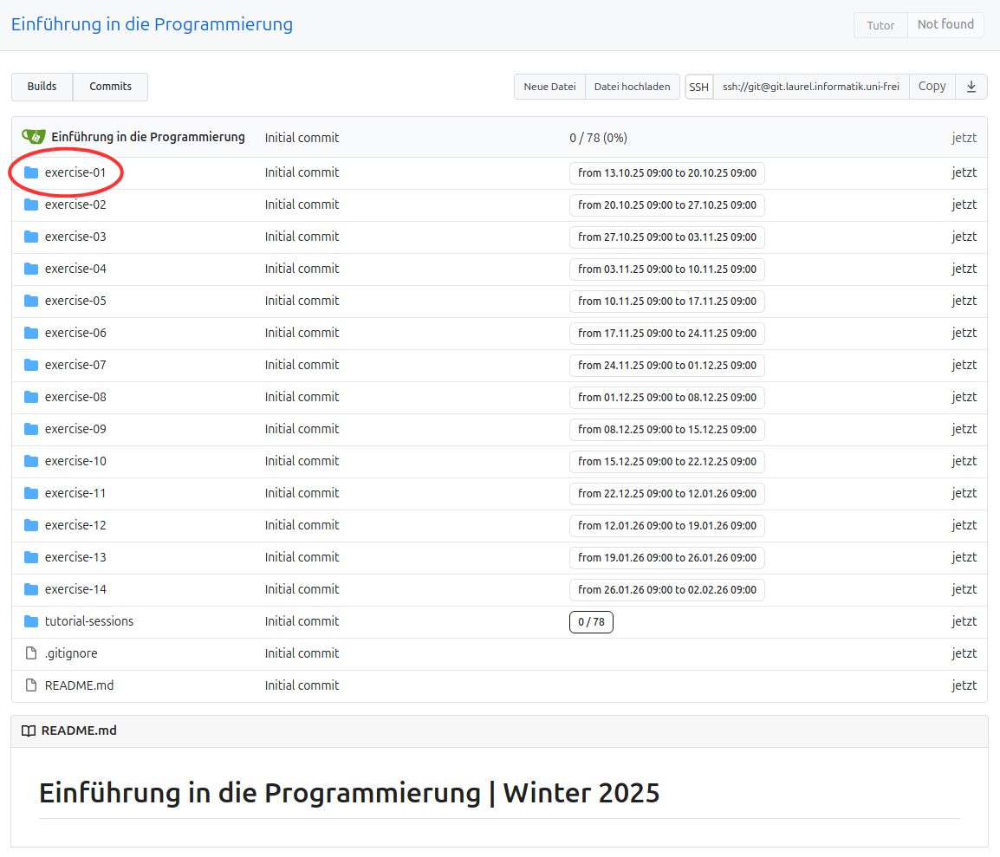
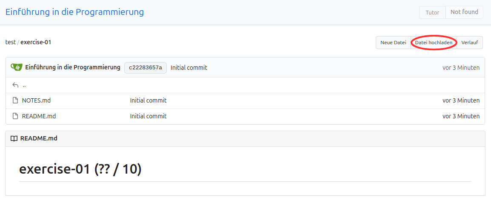
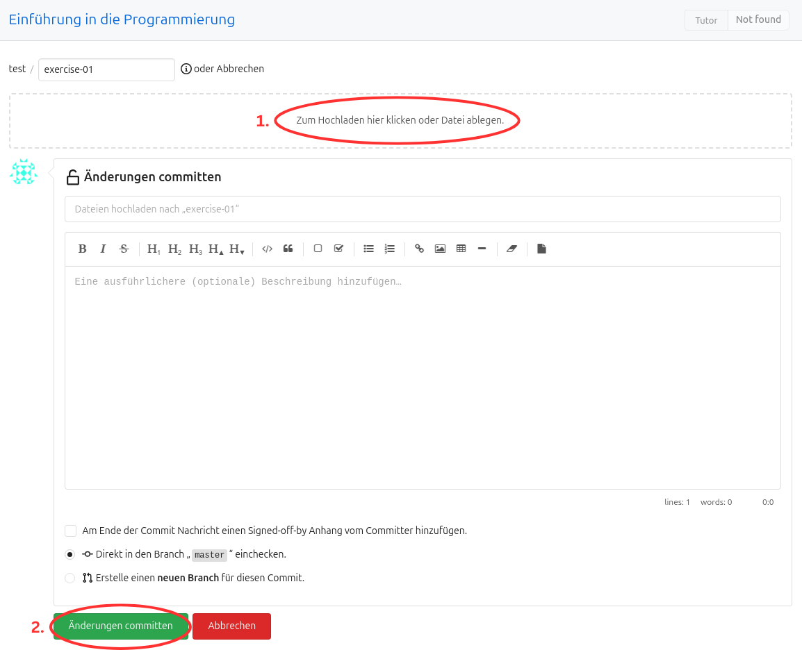
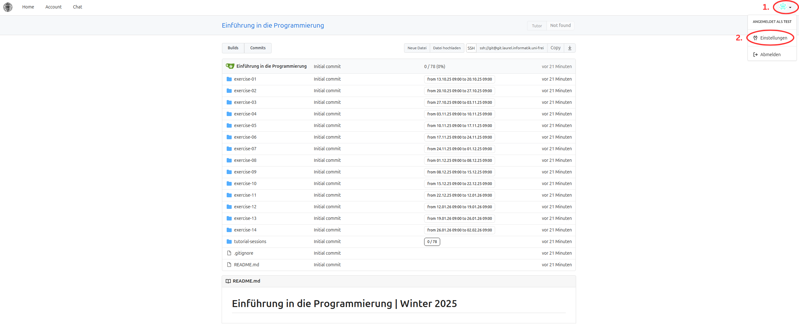
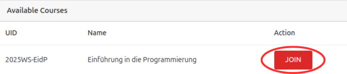
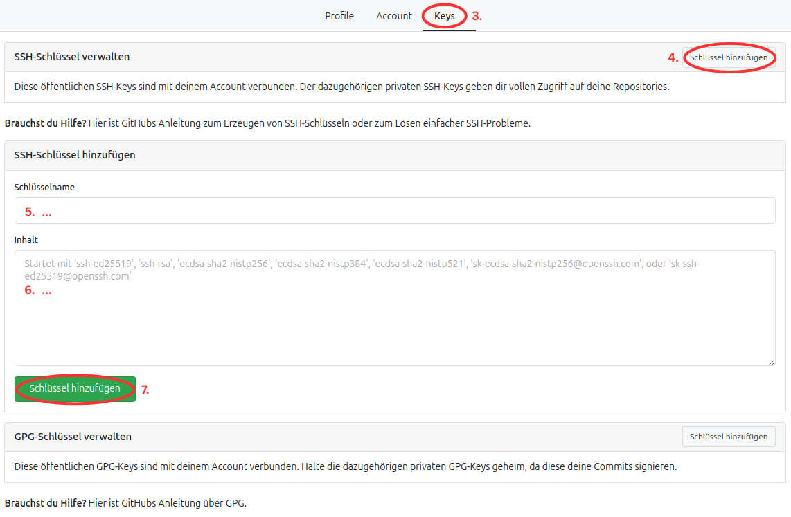
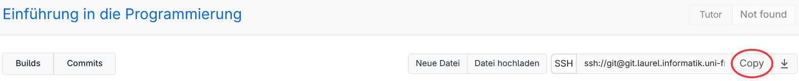
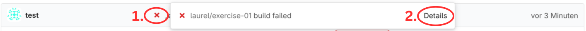

Home
Note
Exam Reviews
on Monday, 2026-10-19, 10am-12pm, Werthmannstr. 4:
- Pool Room 1: Theoretische Informatik, Concurrency Theory (repeat exam)
- Pool Room 3: Essentials of Programming Languages, Einführung in die Programmierung (Wiederholungsklausur)
Please bring your Unicard and an ID document.
Teaching
[ Projects & Thesis | Winter 2026 | Summer 2026 | Winter 2025 | Summer 2025 | Winter 2024 | Summer 2024 | Before 2024 ]
Projects and Thesis
Requests regarding theses or projects are always welcome! If you are interested in supervision, you can look for available topics here.
Agda AG
We meet weekly to discuss our current problems on formalizing proofs in Agda. If you wish to attend, write an email to Prof. Dr. Thiemann.
Frequency: Every semester
Lectures
Einführung in die Programmierung
Verpflichtende Erstsemestervorlesung zur Programmierung mit Python.
Angebotsfrequenz: Jedes Wintersemester
Theoretische Informatik
Verpflichtende Bachelorverlesung zu Grundlagen der Theoretischen Informatik.
Angebotsfrequenz: Jedes Sommersemester
Functional Programming
Specialization course about functional programming using Haskell Lean.
Frequency: Roughly every 1 1/2 years
Essentials of Programming Languages
Specialization course about mechanized theorem proving in Agda and programming language theory.
Frequency: Roughly every 1 1/2 years
Compiler Construction
Specialization course about writing a RISC-V compiler in Python.
Frequency: Roughly every 1 1/2 years
Concurrency Theory
Specialization course about concurrent systems and their underlying theory.
Frequency: Roughly every 1 1/2 years
Projects & Theses
Available Projects & Theses
General Information
Our projects and theses are focused on the design and implementation of programming languages, functional and object-oriented programming, type systems and static analysis, semantics, concurrency, mechanized metatheory, and theorem proving.
If you are interested in one of the topics below or you have a specific topic in mind yourself please write an email to Prof. Dr. Thiemann.
This page is a living document and we may not always be able to update it in time. Some topics may already be taken and others might not yet have found their way onto here. If you are interested in a project or thesis with our chair but cannot find a suitable topic feel free to write an email to as well and let us know which of the specialization courses offered by our chair you have taken.
Bachelorprojekt
Extensions to the compiler construction lecture compiler
- Arrays
- Strings / Chars
- Match
- …?
Bachelorarbeit
Master Lab Course
Interpreter Comparison for Session Types
- implement an interpreter for a language with session types (and borrowing), given by us
- implement a translation given by us
- implement a interpreter for the translated language
- should be step based and visually pleasing
Master Project
Extensions to the compiler construction lecture compiler
call/ccshift/reset- generators
Register Allocation using SAT Solving
- Usage of the compiler from the lecture
- Translation of the graph coloring problem to SAT
- Interfacing with an existing SAT solver (e.g. KISSAT, CaDiCaL)
- (Fuzzer based) Generation of large program instances to produce reasonable benchmarks for both runtime and compilation speed
Use agda-hs for program extraction of existing correct algorithm
- students must be comfortable adjusting the Agda code to fit the custom agda-hs prelude
Reproduce Agda proofs in Lean
- SystemF or Logical Rel.
- Possible research questions:
- What is a good representation for syntax (extrinsic; scoped; intrinsic)?
- How do we represent substitutions?
- What can Lean solve automatically, what Agda cannot?
- What libraries exist to formalize PLs in Lean?
effect-calculus denotational semantics in Agda
Master Thesis
Implement dependent pattern matching in Rust
Finished Projects & Theses
Winter 2025
Einführung in die Programmierung
Übersicht
- Dozent: Prof. Dr. Peter Thiemann
- Assistent: Marius Weidner
- Vorlesung: HS 00 026 µ-Saal G.-Köhler-Allee 101, Dienstags 10:15-11:30 und Mittwochs 12:00-13:15
Vorlesung
Übungen
Leistungen
Studienleistung
Zum Bestehen der Studienleistung ist notwendig:
- 50% der Übungspunkte. Beachten Sie, dass 20% der Übungspunkte für die Teilnahme an den Tutoraten vergeben wird.
- Zweimaliges Vorstellen einer (Teil-)Lösung im Tutorat.
Wichtig für fachfremde Studierende: Für die Studienleistung muss auch die Klausur bestanden werden.
Prüfungsleistung
Für das Bestehen der Prüfungsleistung ist das Bestehen der Klausur notwendig.
Functional Programming in Lean
General Information
- Lecturer: Prof. Dr. Peter Thiemann
- Assistant: Marius Weidner
Lecture
| Date | Topic | Material | Recording |
|---|
Tutorial
| Date | Topic | Recording |
|---|
Exercises
| Date | Due | Material |
|---|
Exam
| Date | Time | Place | Mode |
|---|---|---|---|
| tba. | tba. | Computer Pools (tba.) | closed block, live programming |
Proseminar (tba.)
Übersicht
- Dozent: [Prof. Dr. Peter Thiemann][PT]
- Assistenz: [Janek Spaderna][JS]
| Datum | Änderungen/Neuigkeiten |
|---|
Termine
| Datum | Thema | Vortrag | Betreuer |
|---|
Summer 2026
- Theoretische Informatik
- Essentials of Programming Languages
- Topics in Compilers & Concurrency – Seminar
Theoretische Informatik
Note
Klausureinsicht Theoretische Informatik
am Montag, 19.10.2026, 10-12 Uhr, Poolraum 1, Werthmannstr. 4. Bitte mitbringen:
- Unicard, Lichtbildausweis
Übersicht
- Dozent: Prof. Dr. Peter Thiemann
- Assistent: Marius Weidner
- Vorlesung: HS 00 026 µ-Saal G.-Köhler-Allee 101, dienstags 16:15–17:30 Uhr und mittwochs 12:00–13:00 Uhr
Skript
Die aktuelle Version des Skripts wird jeweils nach der Vorlesung auf den neusten Stand gebracht.
Vorlesung
| Datum | Thema |
|---|---|
| Di, 21.04.2026 | Vorspann Sprachen |
| Mi, 22.04.2026 | Reguläre Sprachen, DEA |
| Di, 28.04.2026 | Reguläre Sprachen, Minimierung |
| Mi, 29.04.2026 | Reguläre Sprachen, Rechtskongruenz |
| Di, 05.05.2026 | Reguläre Sprachen, Satz von Nerode |
| Mi, 06.05.2026 | keine Vorlesung |
| Di, 12.05.2026 | Reguläre Sprachen, NEA |
| Mi, 13.05.2026 | Reguläre Sprachen, Pumping Lemma |
| Di, 19.05.2026 | Reguläre Sprachen, NEA-epsilon |
| Mi, 20.05.2026 | Reguläre Sprachen, Reguläre Ausdrücke |
| Di, 02.06.2026 | Grammatiken, Chomsky Hierarchie |
| Mi, 03.06.2026 | Kf Grammatiken: Ableitungsbäume, Grammatiktransformationen |
| Di, 09.06.2026 | Kf Grammatiken: Transformationen, CNF, CYK-Algorithmus |
| Mi, 10.06.2026 | Pumping Lemma für kf Sprachen |
| Di, 16.06.2026 | a^nb^nc^n, Abschlusseigenschaften von CFL, Kellerautomaten (NPDA) |
| Mi, 17.06.2026 | CFL => Kellerautomat (NPDA) |
| Di, 23.06.2026 | NPDA => CFG, Primitive Rekursion |
| Mi, 24.06.2026 | Primitive Rekursion, LOOP Berechenbarkeit |
| Di, 30.06.2026 | Mu Rekursion, WHILE Berechenbarkeit |
| Mi, 24.06.2026 | Mu Rekursion vs TM Berechenbarkeit, Ackermannfunktion |
| Mi, 22.07.2026 | Fragestunde |
Am Mittwoch, den 22.07.2026, findet eine Fragestunde zur Klausur und den Themen der Vorlesung statt.
Übungen
Es wird insgesamt 12 Übungsblätter geben. Die letzten beiden Übungsblätter sind Wiederholungsblätter zu den in der Vorlesung behandelten Themen.
| Datum | Abgabe | Material | Lösungen |
|---|---|---|---|
| Mi, 22.04.2026 | Di, 28.04.2026, 16:00 Uhr | Blatt 01 | Lösung |
| Mi, 29.04.2026 | Di, 05.05.2026, 16:00 Uhr | Blatt 02 | Lösung |
| Mi, 06.05.2026 | Di, 12.05.2026, 16:00 Uhr | Blatt 03 | Lösung |
| Mi, 13.05.2026 | Di, 19.05.2026, 16:00 Uhr | Blatt 04 | Lösung |
| Mi, 20.05.2026 | Di, 02.06.2026, 16:00 Uhr | Blatt 05 | Lösung |
| Mi, 03.06.2026 | Di, 09.06.2026, 16:00 Uhr | Blatt 06 | Lösung |
| Mi, 10.06.2026 | Di, 16.06.2026, 16:00 Uhr | Blatt 07 | Lösung |
| Mi, 17.06.2026 | Di, 23.06.2026, 16:00 Uhr | Blatt 08 | Lösung |
| Mi, 24.06.2026 | Di, 30.06.2026, 16:00 Uhr | Blatt 09 | Lösung |
| Mi, 01.07.2026 | Di, 07.07.2026, 16:00 Uhr | Blatt 10 | Lösung |
| Mi, 08.07.2026 | Mi, 15.07.2026, 08:00 Uhr | Blatt 11 | Lösung |
| Mi, 15.07.2026 | Di, 21.07.2026, 16:00 Uhr | Blatt 12 | Lösung |
Alle Übungsblätter müssen über Git eingereicht werden.
Hinweise:
- Es gibt ein Tutorial zur Übungsplattform
- Es darf nur ein einzelnes PDF-Dokument abgegeben werden.
- Handgeschriebene (und anschließend digitalisierte) Abgaben sind erlaubt.
- Wir prüfen die Abgaben auf Plagiate: Der Austausch von Ideen ist erlaubt, aber alle Abgaben müssen selbstständig erstellt werden.
- Abgaben per E-Mail sowie Abgaben nach der Deadline sind nicht möglich.
Leistungen
Studienleistung
Es gibt 12 Übungsblätter. Für jedes Übungsblatt gibt es 20 Punkte. Daraus ergibt sich eine maximale Gesamtpunktzahl von 240 Punkten. Zum Bestehen der Studienleistung werden 50% der Punkte (120 Punkte) benötigt.
Prüfungsleistung
Die Prüfung findet auf Papier und ohne jegliche Hilfsmittel statt. Genauere Informationen folgen vor der Klausur.
Essentials of Programming Languages
Note
Exam Review Essentials of Programming Languages
on Monday, 2026-10-19, 10am-12pm, Pool Room 3, Werthmannstr. 4. Please bring:
- Unicard, ID document
- University account credentials
General Information
- Lecturer: Prof. Dr. Peter Thiemann
- Assistants: Marius Weidner
- Lecture: R 04 007 Videokonferenz G.-Köhler-Allee 106 and Zoom, Wednesdays 14:15-16
- Exercises: R 04 007 Videokonferenz G.-Köhler-Allee 106 and Zoom, Mondays 10-12
Lecture
| Date | Topic | Material | Recording |
|---|---|---|---|
| 2026-04-29 | Tutorial | worksheet.lagda.md | rec |
| 2026-05-06 | no lecture | ||
| 2026-05-13 | more Induction and Relations | rec | |
| 2026-05-20 | Equality | rec1, rec2 | |
| 2026-06-03 | Isomorphism, Connectives | rec | |
| 2026-06-10 | Quantifiers | rec | |
| 2026-06-17 | Lambda up to types | rec | |
| 2026-06-24 | DeBruijn up to eval | rec | |
| 2026-07-01 | Big-step semantics on DeBruijn | rec | |
| 2026-07-08 | Big-step semantics with closures | rec | |
| 2026-07-15 | Denotational Semantics | denotational_lecture.lagda | rec |
| 2026-07-22 | Interpreter, Logical Relation | Interpreter-2026.lagda | rec |
| 2026-08-12 | Q&A | will not be recorded |
Tutorial
| Date | Chapter | Material | Recording |
|---|---|---|---|
| 2026-04-27 | Getting Started | intro.agda | rec |
| 2026-05-04 | Naturals | naturals.agda | rec |
| 2026-05-11 | Induction | induction.agda | rec |
| 2026-05-18 | Relations | relations.agda | rec |
| 2026-06-01 | Equality, Isomorphism | equality.agda, extensionality.agda, paradoxes.agda | rec |
| 2026-06-08 | Isomorphism, Connectives, Negation | isomorphism.agda, connectives.agda, negation.lagda | rec |
| 2026-06-15 | Negation, Quantifiers, Decidable | negation.agda, quantifiers.agda, decidability.lagda | rec |
| 2026-06-22 | Decidable, Lambda | decidable.agda, lambda.agda | rec |
| 2026-06-29 | Properties, DeBruijn | lambda.agda, intrinsic-extrinsic.agda | rec |
| 2026-07-06 | Properties, DeBruijn | intrinsic-extrinsic.agda | rec |
| 2026-07-13 | DeBruijn | intrinsic-extrinsic.agda | rec |
| 2026-07-20 | DeBruijn | denotational.agda | rec |
Exam
| Date | Time | Place | Mode |
|---|---|---|---|
| tba | tba | tba | computer ∣ closed book |
Links
- Chat for Questions
- Programming Language Foundations in Agda
- Agda Documentation
- Agda Standard Library
- Agda Unicode Symbols
Topics in Compilers & Concurrency – Seminar
General Information
- Lecturer: Prof. Dr. Peter Thiemann
- Assistant: Janek Spaderna
- Room: SR 00-010/014 G.-Köhler-Allee 101
- First Meeting: 2026-04-22, 16:00
| Date | News |
|---|---|
| 2026-04-24 | Preliminary schedule and topic list |
| 2026-05-13 | Updated details about the schedule and presentations |
| 2026-07-01 | Meeting on 2026-07-15 moved to 2026-07-22 |
Topics
The papers are linked from the document. Accessing some of them may require a connection from inside the university network or logging in via the institutional access provided by the university.
Schedule
| Date | Topic |
|---|---|
| 2026-05-13 | Kickoff session |
| … | No weekly meetings |
| starting 2026-06-10 | Weekly meetings with talks |
| … | |
| 2026-07-08 | No meeting |
| 2026-07-15 | No meeting |
| 2026-07-22 | Last regular meeting |
Process
-
You participate in the first meeting on Wednesday, 2026-04-22.
-
Once you have been allocated a spot in the seminar you send your three preferred topics to Janek Spaderna.
(Deadline: 2026-05-05) -
We confirm your assigned topic and publish a schedule.
-
You prepare a report on background materials and related work. Details below.
(Deadline: two weeks before your presentation) -
In pairs of two you prepare a presentation for your assigned topic. Upload your slides until the Friday before your presentation in the Ilias course.
(Deadline: one week before the presentation) -
You attend all other seminar sessions.
Report on Background Materials and Related Work
You have to write a short report on background materials and related work appertaining to your topic. The report should highlight at least five references and explain their significance.
Technical details:
-
Must be at most 3 pages.
-
Must be prepared with LaTeX. An introduction may be found in the documentation for Overleaf.
-
Must use the LaTeX document class
llncs.cls. If not part of your LaTeX installation it is available on the Springer web page Information for Authors together with a template and documentation. The materials can be downloaded via the LaTeX2e Proceedings Templates download link and are also available as an Overleaf template.
Do not change the formatting parameters ofllncs.clsin any way. -
Must use BibTeX for references. The bibliography should be complete and correct. Many BibTeX references can be obtained from the dblp computer science bibliography.
Presentation
30 minutes + 15 minutes questions/discussion
Winter 2025
Einführung in die Programmierung
Note
Klausureinsicht Einführung in die Programmierung (Wiederholungsklausur)
am Montag, 19.10.2026, 10-12 Uhr, Poolraum 3, Werthmannstr. 4. Bitte mitbringen:
- Unicard, Lichtbildausweis
- Zugangsdaten Uniaccount
Bitte seien Sie fair zu Ihren Kommilitonen und beschränken Sie Ihre Sitzung auf maximal 20 Minuten.
Übersicht
- Dozent: Prof. Dr. Peter Thiemann
- Assistent: Marius Weidner
- Vorlesung: HS 00 026 µ-Saal G.-Köhler-Allee 101, Dienstags 10:15-11:30 und Mittwochs 12:00-13:15
Vorlesung
| Datum | Thema | Material | Aufzeichnung |
|---|---|---|---|
| Di 15.10.25 | Organisation & Einführung | Folien 00, Folien 01, Setup | MP4 |
| Mi 16.10.25 | Übungssystem & Erste Schritte in Python | Folien 02, Abgabesystem | MP4 |
| Di 21.10.25 | Werte, Type, Variablen, Ausdrücke | Folien 03, Handout 03 | YT |
| Mi 22.10.25 | Ausdrücke, Funktionen | Folien 04, Handout 04 | YT |
| Di 28.10.25 | Funktionen, Bedingungen, bedingte Ausführung | Folien 05, Handout 05 | YT |
| Mi 29.10.25 | Bedingte Ausführung | YT | |
| Di 04.11.25 | Sequenzen | Folien 06, Handout 06 | YT |
| Mi 05.11.25 | Iteration, For-Schleifen | YT | |
| Di 11.11.25 | Entwurf von Schleifen | Folien 07, Handout 07 (update) | YT |
| Mi 12.11.25 | While-Schleifen | YT | |
| Di 18.11.25 | Datenklassen | Folien 08, Handout 08 | YT |
| Mi 19.11.25 | Datenklassen, Alternativen | Folien 09, Handout 09 | YT |
| Di 25.11.25 | Alternativen: Pattern Matching | YT | |
| Mi 26.11.25 | Bäume, Binärbäume | Folien 10, Handout 10 | YT |
| Di 02.12.25 | Binärbäume, Suchbäume | Folien 11, Handout 11 | YT |
| Mi 03.12.25 | veränderliche Daten | YT | |
| Di 09.12.25 | Objekt-orientierte Programmierung | Folien 12, Handout 12 | YT |
| Mi 10.12.25 | Aggregate etc | Folien 13, Handout 13 | YT |
| Di 16.12.25 | Operatoren | Folien 13, Handout 13 (update) | YT |
| Mi 10.12.25 | Dictionaries, Sets | Folien 14, Handout 14 | YT |
| Mi 07.01.26 | Rekursion | Folien 15, Handout 15 | YT |
| Di 13.01.26 | Rekursion, Endrekursion | Folien 15, Handout 15 (update) | YT |
| Mi 14.01.26 | Ausnahmen, Generatoren | Folien 16, Handout 16 | YT |
| Di 20.01.26 | Iteratoren | YT | |
| Mi 21.01.26 | Funktionale Programmierung | Folien 17, Handout 17 | YT |
| Di 27.01.26 | Funktionale Programmierung, Komprehensionen | YT | |
| Mi 28.01.26 | Dekoratoren | Folien 18, Handout 18 | YT |
| Di 03.02.26 | YT | ||
| Mi 04.02.26 | Fragestunde | kein Stream, keine Aufzeichnung |
Übungen
| Datum | Abgabe | Material |
|---|---|---|
| Di 14.10.25 | Mo 20.10.25 09:00 über Git | Blatt01 |
| Di 21.10.25 | Mo 27.10.25 09:00 über Git | Blatt02 |
| Di 28.10.25 | Mo 03.11.25 09:00 über Git | Blatt03 |
| Di 04.11.25 | Mo 10.11.25 09:00 über Git | Blatt04 |
| Di 11.11.25 | Mo 17.11.25 09:00 über Git | Blatt05 |
| Di 18.11.25 | Mo 24.11.25 09:00 über Git | Blatt06 |
| Di 25.11.25 | Mo 01.12.25 09:00 über Git | Blatt07 |
| Di 02.12.25 | Mo 08.12.25 09:00 über Git | Blatt08 |
| Di 09.12.25 | Mo 15.12.25 09:00 über Git | Blatt09 |
| Di 16.12.25 | Mi 07.01.26 09:00 über Git | Blatt10 |
| Mi 07.01.26 | Mo 12.01.26 09:00 über Git | Blatt11 |
| Di 13.01.26 | Mo 19.01.26 09:00 über Git | Blatt12 |
| Di 20.01.26 | Mo 26.01.26 09:00 über Git | Blatt13 (update!) |
| Di 27.01.26 | Mo 02.02.26 09:00 über Git | Blatt14 |
Bitte beachten Sie die Abgaberegeln. Lösungen zu den Übungsblättern gibt es hier.
Das letzte Übungsblatt wird eine Probeklausur sein.
Notizen aus den Tutorien finden Sie hier.
Die Tutoratsplätze werden über HisInOne vergeben (First come, first served).
Leistungen
Studienleistung
Zum Bestehen der Studienleistung ist notwendig:
- 50% der Übungspunkte. Beachten Sie, dass 20% der Übungspunkte für die Teilnahme an den Tutoraten vergeben wird.
- Zweimaliges Vorstellen einer (Teil-)Lösung im Tutorat.
Wichtig für fachfremde Studierende: Für die Studienleistung muss auch die Klausur bestanden werden.
Prüfungsleistung
Für das Bestehen der Prüfungsleistung ist das Bestehen der Klausur notwendig.
Die Klausur findet am 19.02.2025 statt. Die individuelle Uhrzeit und der individuelle Ort der Prüfungen kann in der Woche vor der Klausur hier eingesehen werden. Halten Sie sich unbedingt den ganzen Tag (von 8-19 Uhr) frei.
Concurrency Theory
Note
Exam Review Concurrency Theory (Repeat Exam)
on Monday, 2026-10-19, 10am-12pm, Pool Room 1, Werthmannstr. 4. Please bring:
- Unicard, ID document
General Information
- Lecturer: Prof. Dr. Peter Thiemann
- Assistants: Marius Weidner, Leonardo Mieschendahl (until Dec 31, 2025)
- Lecture: R 04 007 Videokonferenz G.-Köhler-Allee 106 and Zoom, Tuesdays 14-16
- Exercises: R 04 007 Videokonferenz G.-Köhler-Allee 106 and Zoom, Mondays 10-12
Lecture
| Date | Topic | Material | Recording |
|---|---|---|---|
| Tu 2025-10-21 | Intro & Overview | Slides 01, Slides 02 | rec |
| Tu 2025-10-28 | Equivalence | Slides 03 | rec |
| Tu 2025-11-04 | Bisimulation and Weak Bisimulation | Slides 04, Handout 04, Slides 05, Handout 05 | rec |
| Tu 2025-11-11 | Properties of Weak Bisimulation, Fixed Points | Slides 06, Handout 06, Slides 07, Handout 07 | rec |
| Tu 2025-11-18 | Fixed Points, Induction, Coinduction | Slides 07*, Handout 07* | rec |
| Tu 2025-11-25 | ABP, Hennessy-Milner Logic | Slides 08, Handout 08, Slides 09, Handout 09 | rec |
| Tu 2025-12-02 | HML with recursion | Slides 10, Handout 10, Slides 11, Handout 11 | rec |
| Tu 2025-12-09 | Mutual recursion, Value-passing CCS | Slides 12, Handout 12 | rec |
| Tu 2025-12-16 | Timed CCS | Slides 13, Handout 13, Slides 14, Handout 14 | rec |
| Tu 2026-01-13 | Petri Nets, Interleaving semantics | Slides 15, Handout 15 | rec |
| Tu 2026-01-20 | Petri Nets, Concurrent semantics | Slides 16, Handout 16 | rec |
| Tu 2026-01-27 | Petri Nets, from guarded CCS | Slides 17, Handout 17 | rec |
| Tu 2026-02-03 | Fundamentals of Session Types | Slides 18 | rec |
Tutorial
| Date | Topic | Recording |
|---|---|---|
| Mo 2025-11-03 | CCS Syntax & Semantics, LTS and Equivalence | rec |
| Mo 2025-11-10 | Strong Bisimulation | rec |
| Mo 2025-11-17 | Weak Bisimulation | rec |
| Mo 2025-11-24 | Fixpoint Interpretation & Coinduction | rec |
| Mo 2025-12-01 | HML Formulas | rec |
| Mo 2025-12-08 | HML with Recursion | rec |
| Mo 2025-12-15 | HML with Recursion & Value-Passing CCS | rec |
| Mo 2026-01-12 | Exam Preparation (missing last 20min) | rec |
| Mo 2026-01-19 | Petri Nets: Syntax & Semantics | rec |
| Mo 2026-01-26 | True Concurrency Semantics | rec |
| Mo 2026-02-02 | Petri Nets, CCS to Petri Nets and Session Types | rec |
Exam
| Date | Time | Place | Mode |
|---|---|---|---|
| 2026-02-23 | 13-15 | G 082 R 00 006 | written ∣ on paper ∣ closed book |
Exercises
| Date | Due | Material |
|---|---|---|
| Tu 2025-10-28 | Mo 2025-11-03 | Sheet01 |
| Tu 2025-11-04 | Mo 2025-11-10 | Sheet02 |
| Tu 2025-11-11 | Mo 2025-11-17 | Sheet03 |
| Tu 2025-11-18 | Mo 2025-11-24 | Sheet04 |
| Tu 2025-11-25 | Mo 2025-12-01 | Sheet05 |
| Tu 2025-12-02 | Mo 2025-12-08 | Sheet06 |
| Tu 2025-12-09 | Mo 2025-12-15 | Sheet07 |
| Th 2025-12-20 | Mo 2026-01-12 | Sheet08 |
| Tu 2026-01-13 | Mo 2026-01-19 | Sheet09 |
| Tu 2026-01-20 | Mo 2026-01-26 | Sheet10 |
| Tu 2026-01-27 | Mo 2026-02-02 | Sheet11 |
Automatentheorie – Proseminar
Übersicht
- Dozent: Prof. Dr. Peter Thiemann
- Assistenz: Janek Spaderna, Leonardo Mieschendahl
- Raum: SR 00 014, Gebäude 078
- Erstes Treffen: 14.10.2025, 16:00 Uhr
| Datum | Änderungen/Neuigkeiten |
|---|---|
| 07.10. | Themen, Informationen zum Seminarsablauf |
| 10.10. | weitere Themen |
| 29.10. | Vortragstermine veröffentlicht |
| 22.11. | Tippfehler und Paperlink (Antimirov-Ableitungen) gefixt |
| 08.01. | “Automata Theory and Logic” (2025) verlinkt |
| 29.01. | Kein Seminarstermin am 03.02. |
Termine
| Datum | Thema | Vortrag | Betreuer |
|---|---|---|---|
| 02.12. | (2) Schwache, monadische Logik zweiter Stufe | Moritz | PT |
| (3) Alternierende, endliche Automaten | Fabian | JS | |
| 09.12. | (4) Sternfreie Sprachen | Carola | LM |
| (12) Automaten auf endlichen Bäumen | Olivia | JS | |
| 16.12. | Derivatives of regular expressions | Peter | LM |
| Partial derivatives of regular expressions … | Leon | JS | |
| 13.01.2026 | (5) Automaten auf unendlichen Wörtern | Henry | JS |
| (6) Komplementierung von Büchi-Automaten | Lukas | PT | |
| 20.01.2026 | (7) Weitere Akzeptanzbedingungen | Joa Jeremias | JS |
| (8) Determinisierung von Büchi-Automaten | Kristin | PT | |
| 27.01.2026 | (10) Alternierende Automaten | Lena | JS |
| Symbolic tree automata | Maurice | PT | |
Alle Sitzungen starten um 16:00 s.t.
Ablauf des Seminars
-
Teilnahme am ersten Treffen (14.10.2025), in dem wir die Themen (siehe unten) vorstellen. Themenwünsche können bereits vorher per Mail eingereicht werden (bitte an Prof. Thiemann und Janek Spaderna).
-
Seminarsplätze werden zugeteilt, Themen final vergeben, sowie Betreuer und Vortragstermine bekannt gegeben.
-
In einem ersten Treffen mit dem Betreuer werden eventuelle Fragen geklärt, relevante Literatur besprochen und ein erster, sehr grober Entwurf des Vortrags entwickelt.
(Deadline: vier Wochen vor der Präsentation) -
In einem zweiten Treffen wird dem Betreuer der inzwischen konkret ausgearbeitete Plan für den Vortrag vorgestellt und dann gemeinsam besprochen. Alle Materialien für den Vortrag (siehe unten) sollten bereits fertig sein und werden ebenfalls besprochen.
(Deadline: eine Woche vor der Präsentation) -
Anwesenheit bei den anderen Seminarsvorträgen
Die Seminarsteilnehmer:innen sind selbst dafür zuständig, passende Besprechungstermine mit dem zuständigen Betreuer zu vereinbaren.
Vortrag
-
Der Vortrag (40 Minuten) erfolgt an der Tafel und muss einen nicht trivialen Beweis präsentieren. Der Vortrag erfolgt ohne Folien und darf nicht abgelesen werden; stichpunktartige Notizen sind sinnvoll.
-
Ziel des Vortrags ist, dass die Zuhörerschaft (Informatik-Bachelorstudierende, keine Experten) die Möglichkeit hat, etwas Neues über ein interessantes Thema zu lernen. Wie gut das gelingt, wird einen Großteil der Note bestimmen.
Themen und Literatur
Grundlage des Proseminars ist das Buch „Automatentheorie und Logik“ von Hofmann und Lange. Ein Vortrag entspricht einem Kapitel im Buch vom Umfang etwa einer Vorlesungsstunde. Das Buch ist online (über das Universitätsnetzwerk, z. B. via VPN) und in der Fakultätsbibliothek verfügbar. Es gibt eine überarbeitete und erweiterte Version von 2025, die ebenfalls online über die UB bereitgestellt wird.
Außerdem stehen folgende Themen zur Verfügung, die nicht im Buch enthalten sind:
-
Brzozowski-Ableitungen
JA Brzozowski. Derivatives of regular expressions. J. ACM, 11(4):481–494, 1964.
-
Antimirov-Ableitungen
VM Antimirov. Partial derivatives of regular expressions and finite automaton constructions. Theor. Comput. Sci., 155(2):291–319, 1996.
-
Symbolische Baum-Automaten
M Veanes, NS Bjørner. Symbolic tree automata. Inf. Process. Lett., 115 (3):418–424, 2015.
Summer 2025
- Compiler Construction
- Essentials of Programming Languages
- Functional Programming and Logic (Seminar)
Compiler Construction (Summer 2025)
Note
Exam Review Retake Compiler Construction
on Monday, 2026-04-20, 2-4pm, Pool 3, Werthmannstr. 4. Please bring:
- Unicard, ID document
- Uni account login
General Information
- Lecturer: Prof. Dr. Peter Thiemann
- Assistants: Leonardo Mieschendahl, Marius Weidner
- Lecture: Tuesdays 14-16, R 04 007 Videokonferenz G.-Köhler-Allee 106, Livestream (Zoom Meeting-ID: 661 1930 0692, Password: nsWAD0nCW)
- Exercises: Fridays 14-16, R 04 007 Videokonferenz G.-Köhler-Allee 106, Livestream (Zoom Meeting ID: 621 5357 2187, Passcode: MMkG4kTky)
Exam Review
Mo, 20.10.25 14:00 - 16:00, Werthmannstraße 4, PC Pool 9
Lectures & Tutorials
| Date | Type | Topic | Material | Recordings |
|---|---|---|---|---|
| 2025-04-22 Tu | Lecture | Organization & Introduction | Book, Chapter 1; Slides | Rec |
| 2025-04-25 Fr | Lecture | Chapter 2 | Book, Chapter 2; Slides | Rec |
| 2025-04-29 Tu | Lecture | Chapter 3 | Book, Chapter 3; Slides; Code | Rec |
| 2025-05-02 Fr | Tutorial | Compiler for \(\mathcal{L}_{var}\) | - | Rec |
| 2025-05-06 Fr | Lecture | Chapter 4 | Book, Chapter 4 | Rec |
| 2025-05-09 Fr | Tutorial | Register Allocation for \(\mathcal{L}_{var}\) | - | Rec |
| 2025-05-13 Tu | Lecture | Chapter 5 | Book, Chapter 5 | Rec |
| 2025-05-16 Fr | Tutorial | Compiler for \(\mathcal{L}_{if}\) | - | Rec |
| 2025-05-20 Tu | Lecture | Chapter 6 | Book, Chapter 6, Slides, Notes | Rec |
| 2025-05-23 Fr | Tutorial | Compiler for \(\mathcal{L}_{while}\) | - | Rec |
| 2025-05-27 Tu | Lecture | Chapter 7 | Book, Chapter 7, Slides | Rec |
| 2025-05-30 Fr | Tutorial | Compiler for \(\mathcal{L}_{tup}\) | - | Rec |
| 2025-06-03 Tu | Lecture | Chapter 8 | Book, Chapter 8 , Notes | Rec |
| 2025-06-06 Fr | Tutorial | Compiler for \(\mathcal{L}_{fun}\) | - | Rec |
| 2025-06-17 Tu | Lecture | Chapter 9 | Book, Chapter 9 , Notes | Rec |
| 2025-06-20 Fr | Tutorial | No tutorial | - | - |
| 2025-06-24 Tu | Lecture | Chapter 12 | Book, Chapter 12 , Notes | Rec |
| 2025-06-27 Fr | Tutorial | Compiler for \(\mathcal{L}_{\lambda}\) | - | Rec |
| 2025-07-01 Tu | Lecture | Data classes | Notes | Rec |
| 2025-07-04 Fr | Tutorial | Compiler for \(\mathcal{L}_{class}\) | - | Rec |
| 2025-07-08 Tu | Lecture | Peephole Optimization | Notes, Slides | Rec |
| 2025-07-11 Fr | Tutorial | Peephole Optimization | - | Rec |
| 2025-07-15 Tu | Lecture | Loop Optimization | Slides | Rec |
| 2025-07-18 Fr | Tutorial | Questions | - | Rec |
| 2025-07-22 Tu | Lecture | Exceptions | Slides | Rec |
Exercises
Exercises are provided and submitted via GitHub Classroom.
Exercises will not be graded, but we will provide tests to help you verify the correctness of your work. It is highly recommended to take the exercises seriously, as the exam requires you to extend the compiler from the final sample solution with new features.
Exam
The exam will take place in the computer pools and requires you to extend the compiler implemented in the exercises with new features.
Communication
For communication outside of the lecture, we provide an discord-like chat. The chat requires you to log in with your RZ-Account (same credentials as for Ilias).
Contents
Compiler construction deals with the development and implementation of translation from higher-level programming languages to machine code. This involves several important problems of general interest:
-
Semantic Analysis. A compiler transforms and analyses the tree structure of a program. This phase is specified using attribute grammars.
-
Intermediate Code. A compiler generates machine-independent intermediate code and performs several transformation and optimization steps on it.
-
Memory model and garbage collection. The compiler maps data structures to memory structures. Languages with dynamic types and/or garbage collection require special care.
-
Machine code. Intermediate code is translated to machine code, which undergoes machine-specific optimizations. This involves techniques like tree grammars, dynamic programming and graph coloring.
Compiler construction has a long tradition, so the structure of compilers has been well thought out. Therefore, a compiler can act as an example for a well-structured software system. “Who can write a compiler, can write any program”.
Knowledge about the memory model is helpful when debugging programs written in a low-level programming language (C, C++).
Literature
This lecture is based on the Python version of the book Essentials of Compilation by Jeremy G. Siek.
We will deviate from the book in several ways:
- we use the (unpublished) Python version of the book;
- we compile to the RISC-V processor architecture instead of x86; and
- we use a different Python framework for the exercises.
For this reason, we maintain our own fork of the book, which is mostly ported to use RISC-V instead of x86 instructions.
Our version of the book is available on the GitHub Releases
page. Simply download the book.pdf file for the most recent release.
To get notified on new releases, we recommend the watch-button on the book’s GitHub repository, select Custom in the dropdown menu, and select Releases.
Additional Literature
- Andrew Appel with Jens Palsberg, Modern Compiler Implementation in Java, 2nd edition. Cambridge University Press, 2002
- Alfred V. Aho, Monica S. Lam, Ravi Sethi, and Jeffrey D. Ullman. Compilers, Principles, Techniques, and Tools (2nd Edition).. Prentice Hall, 2006.
- Andrew W. Appel. Compiling with Continuations. Cambridge University Press, 1992.
- Andrew W. Appel. Modern Compiler Implementation in ML. Cambridge University Press, 1998.
- Christopher W. Fraser and David R. Hanson. A Retargetable C Compiler: Design and Implementation. Benjamin/Cummings, 1995.
- Reinhard Wilhelm and Dieter Maurer. Übersetzerbau – Theorie, Konstruktion, Generierung – 2. Auflage. Lehrbuch. Springer-Verlag, Berlin, Heidelberg, 1996.
Essentials of Programming Languages (Summer 2025)
Note
Exam Review Retake Essentials of Programming Languages
on Monday, 2026-04-20, 2-4pm, Pool 3, Werthmannstr. 4. Please bring:
- Unicard, ID document
- Uni account login
General Information
- Lecturer: Prof. Dr. Peter Thiemann
- Assistants: Hannes Saffrich
- Lecture: Wednesday, 14:15-15:45, SR 00 006, G.-Köhler-Allee 051
- Tutorials: Friday, 12:15-13:45, online via Zoom, Meeting ID: 612 1758 5445, Password: eopl-2025
- Lecture live stream: Zoom, Meeting-ID: 636 7754 2064, Password: D68F45Zta
Exam Review
Mo, 20.10.25 14:00 - 16:00, Werthmannstraße 4, PC Pool 9
Lectures & Tutorials
| Date | Type | Topic | Material | Recordings |
|---|---|---|---|---|
| 2025-04-23 We | Lecture | Overview | Material | Recording |
| 2025-04-25 Fr | Tutorial | Overview | Recording | |
| 2025-04-30 We | Lecture | Induction | Material | Recording |
| 2025-05-02 Fr | Tutorial | Naturals & Induction | Solutions, Solutions | Recording |
| 2025-05-07 We | Lecture | Relations | Material | Recording |
| 2025-05-09 Fr | Tutorial | Relations | Solutions | Recording |
| 2025-05-14 We | Lecture | Equality | Recording 1, Recording 2 | |
| 2025-05-16 Fr | Tutorial | Equality | Solutions | Recording |
| 2025-05-21 We | Lecture | Isomorphism & Connectives | Recording | |
| 2025-05-23 Fr | Tutorial | Isomorphism & Connectives | Solutions, Solutions | Recording |
| 2025-05-28 We | Lecture | Negation & Quantifiers | Material | Recording |
| 2025-05-30 Fr | Tutorial | Negation & Quantifiers | Solutions, Solutions | Recording |
| 2025-06-04 We | Lecture | Booleans & Decidable | Material | Recording |
| 2025-06-06 Fr | Tutorial | Booleans & Decidable | Solutions | Recording |
| 2025-06-18 We | Lecture | Lambda Calculus | Material | Recording |
| 2025-06-20 Fr | Lecture | Lambda Calculus | Material, Solutions | Recording |
| 2025-06-25 We | Lecture | Properties | Material | Recording |
| 2025-06-25 Fr | Lecture | Properties | Material, Solutions | Recording |
| 2025-07-02 We | Lecture | DeBruijn | Material | Recording |
| 2025-07-04 Fr | Tutorial | DeBruijn | Solutions | Recording |
| 2025-07-09 We | Lecture | Big-Step Semantics | Material | Recording |
| 2025-07-11 Fr | Tutorial | Big-Step Semantics | Recording | |
| 2025-07-16 We | Lecture | Denotational Semantics | Material | Recording |
| 2025-07-18 Fr | Tutorial | Denotational Semantics | Material | Recording |
| 2025-07-23 We | Lecture | Imperative-Semantics of While | Material | Recording 1, Recording 2 |
| 2025-07-25 Fr | Tutorial | General Discussion | Recording |
Communication
For communication outside of the lecture, we provide an discord-like chat. The chat requires you to log in with your RZ-Account (same credentials as for Ilias).
Contents
This course conveys the mathematical and logical concepts underlying programming languages using the language Agda. Agda is a functional language with an advanced type system that enables the encoding of many program properties in its types. Agda’s type checker verifies proofs of these properties, so that one could also say this course is about verified programming.
The first part of the course covers the logical background needed to study the theory of programming languages to the extent that we can give formal guarantees about the execution of a program. The content of this part should be familiar from an introductory logic class, but it is presented in an entirely different way. The central idea conveyed is that every program (in a language with a reasonable type system) is really a proof about the meaning of the program. Conversely, it means that every proof can be viewed as a program, so that proving becomes programming a function with a certain type. For example, inductive proofs are expressed by terminating recursive functions. This correspondence is called the Curry-Howard correspondence. It is one of the most powerful discoveries in logics and programming and it is one of the core ideas behind Agda.
The second part of the course puts this toolbox to work. We use Agda’s features to model the syntax and the semantics of (simple) programming languages. We model type systems and connect them to the semantics through type soundness theorems. We learn about different ways of modeling syntax and semantics and their pros and cons. We study type inference as a means to find a best possible (principal) typing for a given program, if such a typing exists.
Literature & Approach
The course mainly follows the online book Programming Language Foundations in Agda (PLFA) by Philipp Wadler, Wen Kokke, and Jeremy Siek:
On Wednesdays we discuss (part of) a chapter from the PLFA book. We ask you to prepare for this by reading the chapter in advance. We will try to cover questions interactively. On Fridays we discuss the exercises of the corresponding chapters (contained in the book), and answer general questions related to Agda, Theorem Proving and Programming Language Theory. Occasionally we may also show you cool stuff not covered in the book. Recordings of the lecture and tutorials will be available so that asychronous participation is possible. If you do not wish to appear in the recordings, feel free to use an alias in the Zoom meetings, turn camera and microphone off, and use the Zoom chat for anonymous participation. The PLFA book is freely available in source code, so that everything can be tried hands on. It is amenable to self study, but the pragmatics of using Agda are much easier to deal with in an interactive supportive environment such as we are trying to provide.
Exercises
The chapters of the PLFA book contain the exercises for this course. We expect you to do the exercises of a chapter after that chapter was covered in the lecture. The solutions to the exercises of a chapter are discussed in the next tutorial after the lecture that covers the chapter. Additionally, the solutions will be made available on this website in the Lectures & Tutorials section.
While the exercises are voluntary and there is no submission, we highly recommend to thoroughly work through the exercises, as the exam will be virtually impossible without practical experience in using Agda.
Exam
The exam will take place on 2025-08-07 from 9-12:00 in the computer pools at Werthmannstraße 4.
Links
- Programming Language Foundations in Agda (Book)
- Official Agda Documentation
- Emacs Agda-Mode Documentation
- Agda Standard Library
- VirtualBox Image with Agda and Emacs
- Discord-like chat for questions about the lecture, exercises, and related topics. Login via RZ-Account, i.e. same as for Ilias.
- A list of all unicode symbols that can be typed in agda-mode via LaTeX commands. You probably need to download this file, because the browser uses the wrong character encoding, which causes the unicode characters to look scrambled.
Functional Programming and Logic – Seminar (Summer 2025)
General Information
- Lecturer: Prof. Dr. Peter Thiemann
- Assistant: Janek Spaderna
- Kickoff meeting: Tue 22.04.25, 16:00, Building 106, R 04 007
- First session: Tue 27.05.25, 16:00
| Date | News |
|---|---|
| 04.04. | List of topics available, preliminary schedule |
| 02.05. | No meeting 06.05. and 13.05. |
| 17.06. | Fix dates for last two meetings (dates were swapped) |
Topics
The papers are linked from the Google sheet. Accessing some of them may require a connection from inside the university network or logging in via the institutional access provided by the university.
Schedule
| Date | Topics |
|---|---|
| 27.05. | - An introduction to logical relations (PT) |
| 03.06. | - Propositions as types (JS) - A taste of linear logic (JS) |
| 10.06. | — No meeting — |
| 17.06. | - Theorems for free! (JS) - Semantic subtyping (PT) |
| 24.06. | - Oxidizing OCaml with modal memory management (PT) - Substructural parametricity (PT) |
| 01.07. | - Free applicative functors (JS) - Freer monads (JS) |
| 08.07. | - HasChor (JS) - Compiling to categories (PT) |
| 15.07. | - What you needa know about Yoneda (PT) - Separation logic for sequential programs (JS) |
| 22.07. | - Iris from the ground up (PT) |
All meetings take place at 16:00 – 18:00 in building 106, R 04 007.
Grading
TBA.
At the latest, details and requirements will be announced during the kickoff meeting.
Winter 2024
Einführung in die Programmierung (Winter 2024)
Übersicht
- Dozent: Prof. Dr. Peter Thiemann
- Assistenten: Marius Weidner, Hannes Saffrich
- Vorlesung: Dienstag 10:15 - 11:45 und Mittwoch 13:00 - 13:45, HS 00 026 \(\mu\) Saal
Klausureinsicht Nachklausur Einführung in die Programmierung
am Freitag, 17.10.2025, 10-12 Uhr, Poolraum 3, Werthmannstr. 4. Die Einsicht findet am Rechner statt. Mobiltelefone und andere elektronische Geräte sind während der Klausureinsicht auszuschalten. Bitte mitbringen:
- Unicard, Lichtbildausweis
- Zugangsdaten Uniaccount
Bitte seien Sie fair zu Ihren Kommilitonen und beschränken Sie Ihre Sitzung auf maximal 20 Minuten.
Vorlesung
| Datum | Thema | Material | Aufzeichnung |
|---|---|---|---|
| Di 15.10.24 | Organisation | Folien 00, Folien 01 | Youtube, Youtube (cont) |
| Di 15.10.24 | Zusatzonlineveranstaltung: Setup | Skript 01 | Youtube |
| Mi 16.10.24 | Zusatzveranstaltung: Abgabesystem | Skript 02 | Youtube |
| Mi 16.10.24 | Grundlagen | Folien 02 | Youtube |
| Di 22.10.24 | Werte, Typen, Variablen und Ausdrücke | Folien 03 | MP4 |
| Mi 23.10.24 | Funktionen: Aufrufe und Definitionen | Folien 04 | MP4 |
| Di 29.10.24 | Bedingungen und bedingte Ausführung | Folien 05, Handout 05 | Youtube, Youtube (cont) |
| Mi 30.10.24 | Sequenzen | Folien 06, Handout 06 | Youtube |
| Di 05.11.24 | Iteration | Folien 06 update, Handout 06 update, Folien 07, Handout 07, Animation | Youtube |
| Mi 06.11.24 | Iteration (Rechnen mit Polynomen) | Youtube | |
| Di 12.11.24 | Iteration, while Schleife | Youtube | |
| Mi 13.11.24 | while Schleife | Youtube | |
| Di 19.11.24 | Objekte und Datenklassen | Folien 08, Handout 08 | Youtube |
| Mi 20.11.24 | Alternativen | Folien 09, Handout 09 | Youtube |
| Di 26.11.24 | Bäume | Folien 10, Handout 10 | Youtube |
| Mi 27.11.24 | Suchbäume, veränderliche Daten | Folien 11, Handout 11 | Youtube |
| Di 03.12.24 | Objektorientierte Programmierung | Folien 12, Handout 12 | Youtube |
| Mi 04.12.24 | Aggregate, Properties | Folien 13, Handout 13 | Youtube |
| Di 10.12.24 | Datenkapselung, Überladung | Folien 13 update, Handout 13 update, Folien 14, Handout 14 | Youtube |
| Mi 11.12.24 | Dictionaries | MP4 | |
| Di 17.12.24 | Rekursion | Folien 15, Handout 15 | Youtube |
| Mi 20.12.24 | TBD | Youtube | |
| Di 07.01.25 | Ausnahmen, Generatoren, Iteratoren | Folien 16, Handout 16 | Youtube |
| Mi 08.01.25 | Iteratoren, Dateien | Youtube | |
| Di 14.01.25 | Funktionale Programmierung | Folien 17, Handout 17 | Youtube |
| Mi 15.01.25 | Komprehensionen | Youtube | |
| Di 21.01.25 | Dekoratoren | Folien 18, Handout 18 | Youtube |
| Mi 22.01.25 | Automaten | Folien 19, Handout 19 | Youtube |
| Di 28.01.25 | Automaten | Folien 19-update, Handout 19-update | Youtube |
| Mi 29.01.25 | Sudoku revisited | Code | Youtube |
| Di 04.02.25 | Brainf*ck | Folien 20, Handout 20 | Youtube |
| Mi 05.02.25 | Ask me anything | Zoom Meeting ID: 827 5928 2295 - Passcode: 1Question | Zoom |
Übungen
| Datum | Abgabe | Material |
|---|---|---|
| Di 15.10.24 | Mo 21.10.24 09:00 über Git | Blatt01 |
| Di 22.10.24 | Mo 28.10.24 09:00 über Git | Blatt02 |
| Di 29.10.24 | Mo 04.11.24 09:00 über Git | Blatt03 |
| Di 05.10.24 | Mo 11.11.24 09:00 über Git | Blatt04 |
| Di 12.11.24 | Mo 18.11.24 09:00 über Git | Blatt05 |
| Di 19.11.24 | Mo 25.11.24 09:00 über Git | Blatt06 |
| Di 26.11.24 | Mo 02.12.24 09:00 über Git | Blatt07 |
| Di 03.12.24 | Mo 09.12.24 09:00 über Git | Blatt08 |
| Di 10.12.24 | Mo 16.12.24 09:00 über Git | Blatt09 |
| Di 17.12.24 | Di 07.01.25 09:00 über Git | Blatt10 |
| Di 07.01.25 | Mo 13.01.25 09:00 über Git | Blatt11 |
| Di 14.01.25 | Mo 20.01.25 09:00 über Git | Blatt12 |
| Di 21.01.25 | Mo 27.01.25 09:00 über Git | Blatt13 |
| Di 28.01.25 | Mo 03.02.25 09:00 über Git | Probeklausur |
| Di 11.02.25 | Mo 17.03.25 09:00 per Mail | Physikblatt, plt_intro.py, test_pillow.py |
Bitte beachten Sie die Abgaberegeln. Lösungen zu den Übungsblättern gibt es hier.
Eine Auswahl der besten Text Adventures finden sie hier.
Tutorate
| Nummer | Datum | Tutor | Raum |
|---|---|---|---|
| 1 | Mi 8-10 | Gloria Dobreva | R 03 026 Seminarraum (G.-Köhler-Allee 051) |
| 2 | Mi 8-10 | Christoph Ullinger | SR 00 006 (G.-Köhler-Allee 051) |
| 3 | Mi 8-10 | Malte Ferber | SR 00 031 (G.-Köhler-Allee 051) |
| 4 | Do 8-10 | Tim Schick | R 03 026 Seminarraum (G.-Köhler-Allee 051) |
| 5 | Do 8-10 | Max Schweigert | SR 00 014 (G.-Köhler-Allee 078) |
| 6 | Do 8-10 | Moritz Steffl | SR 00 031 (G.-Köhler-Allee 051) |
| 7 | Do 8-10 | Paul Dyckmans | SR 00 034 (G.-Köhler-Allee 051) |
| 8 | Do 16-18 | Sven Mally | SR 00 006 (G.-Köhler-Allee 051) |
| 9 | Do 16-18 | Nils Pukropp | SR 00 034 (G.-Köhler-Allee 051) |
| 10 | Do 16-18 | Vincent von Bosse | SR 00 031 (G.-Köhler-Allee 051) |
| 11 | Do 16-18 | Julina Peucker | R 04 007 Videokonferenz (G.-Köhler-Allee 106) |
| 12 | Fr 10-12 | Yannik Schnell | R 03 026 Seminarraum (G.-Köhler-Allee 051) |
| 14 | Fr 10-12 | Edin Vrazalica | G.-Köhler-Allee 101, SR 01-016/18 |
| 15 | Fr 12-14 | Julius Bredemeyer | R 03 026 Seminarraum (G.-Köhler-Allee 051) |
| 16 | Fr 12-14 | Tobias Hoffmann | SR 00 034 (G.-Köhler-Allee 051) |
| 17 | Fr 12-14 | Sebastian Wehmeier | G.-Köhler-Allee 101, SR 01-009/13 |
| 18 | Fr 12-14 | Joshua Schütt | G.-Köhler-Allee 101, SR 01-016/18 |
Die Notizen mancher Tutor/innen finden Sie hier.
Studienleistung
Zum Bestehen der Studienleistung ist notwendig:
- 50% der Übungspunkte (das entspricht 163 Punkten). Beachten Sie, dass 20% der Übungspunkte für die Teilnahme an den Tutoraten vergeben wird.
- Zweimaliges Vorstellen einer (Teil-)Lösung im Tutorat.
Wichtig für fachfremd Studierende: Für die Studienleistung muss auch die Klausur bestanden werden.
Wichtig für fachfremd Physik Studierende: Für die Studienleistung muss auch das Physikblatt absolviert werden.
Prüfungsleistung
Für das Bestehen der Prüfungsleistung ist das Bestehen der Klausur notwendig.
Die Klausur findet am 24.02.2025 zwischen (vorraussichtlich) 12 Uhr und 18 Uhr statt. Die individuelle Uhrzeit und der individuelle Ort der Prüfungen kann in der Woche vor der Klausur hier eingesehen werden.
Für weitere Fragen zur Klausur gibt es ein Q&A, den Chat oder schreiben Sie eine Mail an Marius Weidner.
Zusätzlich zu der Probeklausur (Übungsblatt 14), gibt es zur Vorbreitung die wirkliche Nachklausur des letzten Jahres zum herunterladen.
Die Klausurumgebung kann online und in den Poolräumen des Rechenzentrums / der Werthmannstraße ausprobiert werden. Wählen Sie dazu die Kursumgebung EidP Exam.
Die folgenden Daten sind ohne Gewähr:
- Termin der Notenveröffentlichung: Ende März/Anfang April
- Termin der Klausureinsicht: Erste Sommeremesterwoche
- Termin der Nachklausur: 06.08.2025 (Wahrscheinlich mit mehreren Gruppen, d.h. individuelle Uhrzeiten. Mehr Infos in der Woche vor der Klausur)
Functional Programming (Winter 2024)
Note
Exam Review Retake Functional Programming
on Monday, 2026-04-20, 2-4pm, Pool 3, Werthmannstr. 4. Please bring:
- Unicard, ID document
- Uni account login
General Information
- Lecturer: Prof. Dr. Peter Thiemann
- Assistant: Hannes Saffrich
- Lecture: Tuesday, 14:15 - 15:45, Building 106, SR 04 007
- Tutorials: Friday, 14:15 - 15:45, online via Zoom
- Livestream: Zoom meeting, Passcode: rPZCumB7H, used for lectures and tutorials
Lectures & Tutorials
| Date | Type | Topic | Material | Recordings |
|---|---|---|---|---|
| Tu 2024-10-15 | Lecture | Introduction | 00-intro.pdf, 01-starting-haskell.pdf | |
| Fr 2024-10-18 | Lecture | Introduction | Slides | Video |
| Tu 2024-10-22 | Lecture | Functions, Lists, Algebraic Datatypes | Video (part 1), Video (part 2) | |
| Tu 2024-10-29 | Lecture | Algebraic Datatypes, Higher-Order Functions | Slides, Programs | Video |
| We 2024-10-30 | Tutorial | Discussion of Exercise 1 | Video | |
| Tu 2024-11-05 | Lecture | Higher-Order Functions, Laziness | Slides, Programs | Video |
| Fr 2024-11-08 | Tutorial | Discussion of Exercise 2 | Video | |
| Tu 2024-11-12 | Lecture | Type classes and IO | Slides, Slides, Programs | Video |
| Fr 2024-11-15 | Tutorial | Discussion of Exercise 3 | Video | |
| Tu 2024-11-19 | Lecture | Monads and the Gen Monad | Slides, Programs | Video |
| Fr 2024-11-22 | Tutorial | Discussion of Exercise 4 | Video | |
| Tu 2024-11-26 | Lecture | Monadic interpreters | Slides, Programs | Video |
| Fr 2024-11-29 | Tutorial | Discussion of Exercise 5 | Video | |
| Tu 2024-12-03 | Lecture | Functors, Applicatives | Slides, Programs | Video |
| Fr 2024-12-06 | Tutorial | Discussion of Exercise 6 | Video | |
| Tu 2024-12-10 | Lecture | Monad Transformers | Slides, Programs | Video |
| Fr 2024-12-13 | Tutorial | Discussion of Exercise 7 | Video | |
| Tu 2024-12-17 | Lecture | GADTs | Slides, Programs | Video |
| Fr 2024-12-20 | Tutorial | Discussion of Exercise 8 | Video | |
| Tu 2025-01-07 | Lecture | Lambda Calculus | Slides, Programs | Video |
| Fr 2025-01-10 | Tutorial | Discussion of Exercise 9 | Video | |
| Tu 2025-01-14 | Lecture | Lambda Calculus II | Slides, Programs | Video |
| Fr 2025-01-17 | Tutorial | Discussion of Exercise 10 | Video | |
| Tu 2025-01-21 | Lecture | Polymorphic Types | Slides, Programs | Video |
| Fr 2025-01-24 | Tutorial | Discussion of Exercise 11 | Video | |
| Tu 2025-01-28 | Lecture | Datatypes a la Carte | Programs | Video |
| Fr 2025-01-31 | Tutorial | Discussion of Exercise 12 | Video (part 1), Video (part 2) | |
| Fr 2025-02-07 | Tutorial | Discussion of Exercise 13 | Video |
Exercises
| # | Topic | Material |
|---|---|---|
| 0 | Installation & Basic Usage of the Haskell Toolchain | |
| 1 | Functions, Lists, Recursion | PDF, Solution |
| 2 | Higher-Order Functions | PDF, Code, Solution |
| 3 | Lazy Evaluation | PDF, Solution |
| 4 | Type Classes & IO | PDF, Solution |
| 5 | QuickCheck’s Arbitrary & AVL Trees | PDF, Solution |
| 6 | Functors & Monads | PDF, Code, Solution |
| 7 | Applicatives & Parsers | PDF, Code, Solution |
| 8 | Monad Transformers | PDF, Code, Solution Part 1, Solution Part 2 |
| 9 | GADTs | PDF, Code, Solution |
| 10 | Lambda Calculus (Part 1) | PDF, Solution |
| 11 | Lambda Calculus (Part 2) | PDF, Solution |
| 12 | Polymorphic Types | PDF, Solution |
| 13 | Generic Programming | PDF, Code, Solution |
Content
This course conveys fundamental concepts of functional programming using the programming language Haskell.
Goal
Learning objectives from the module compendium: “Development of a non-procedural view on algorithms and data structures, confident handling of higher-order functions and data, knowledge and ability to apply fundamental functional programming techniques, knowledge of advanced programming concepts, ability to develop medium-size functional programs independently.”
Topic List
- Definition of functions, pattern matching, higher-order functions
- Types and type classes
- Algebraic data types
- Functional data structures
- Applicative parsers
- Monads and monad transformers
- Arrows
- Verification of functional programs
- Monadic I/O and stream I/O
Preliminaries
Interest in learning and applying new programming concepts and languages.
Literature
The book Programming in Haskell by Graham Hutton covers about 30% of the lecture. This book is available in the TF-library.
Stephen Diehl’s WHAT I WISH I KNEW WHEN LEARNING HASKELL
Exam
The exam will be on 2025-03-06 and will take place in the computer pools at Werthmannstraße 4 starting at 14:00. Further information will be announced in due time.
Here are the short programming tasks of three old (take home) exams: exam-01, exam-02, exam-03. The second part of the previous exams was a larger project, which is not included.
Communication
We provide a discord-like chat to allow for asynchronous questions about the lecture, exercises, and functional programming in general. You can log in there with your Ilias credentials.
Announcements will be sent via email through HisInOne. If you do not want to miss these announcements, you should register for the course in HisInOne!
Summer 2024
Compiler Construction (Summer 2024)
General Information
- Lecturer: Prof. Dr. Peter Thiemann
- Assistants: Hannes Saffrich, Marius Weidner
- Lecture: Tuesday, 2:15 pm - 3:45 pm, SR 00 006 (G.-Köhler-Allee 051), Zoom
- Exercises: Friday, 2:15 pm - 3:45 pm, SR 00 006 (G.-Köhler-Allee 051), Zoom
Lectures & Tutorials
| Date | Type | Topic | Material | Recordings |
|---|---|---|---|---|
| 2024-04-16 Tu | Lecture | Organization & Introduction | Book, Chapter 1; Slides | missing |
| 2024-04-19 Fr | - | - | - | - |
| 2024-04-23 Tu | Lecture | Integers & Variables | Book, Chapter 2; Slides; Interpreter; Dockerfile | Video |
| 2024-04-26 Fr | Lecture | Scanning & Parsing | Book, Chapter 3; Slides; Lexer; Earley Example | Video |
| 2024-04-30 Tu | Tutorial | Parsing & Compiler for \(\mathcal{L}_{var}\) | Book, Chapter 2 & 3 | Video |
| 2024-05-03 Fr | Lecture | Register Allocation | Book, Chapter 4; Notes | Video |
| 2024-05-07 Tu | Lecture | Booleans & Conditionals | Book, Chapter 5; Notes | Video |
| 2024-05-10 Fr | Tutorial | Parsing & Compiler for \(\mathcal{L}_{var}\) | Video | |
| 2024-05-14 Tu | Lecture | Conditionals and While | Book, Chapter 5 & 6; Notes | Video |
| 2024-05-17 Fr | Tutorial | Register Allocation for \(\mathcal{L}_{var}\) | Video | |
| 2024-05-28 Tu | Lecture | Liveness Analysis & Garbage Collection | Slides (LA) Slides (GC) | Video |
| 2024-05-31 Fr | Tutorial | Compiler for \(\mathcal{L}_{if}\) | Video | |
| 2024-06-04 Tu | Lecture | Tuples & Garbage Collection | Book, Chapter 7; Slides | Video |
| 2024-06-07 Fr | Tutorial | Compiler for \(\mathcal{L}_{while}\) | Video | |
| 2024-06-11 Tu | Lecture | Top-Level Functions (Interpreter) | Book, Chapter 8; Material | Video |
| 2024-06-18 Tu | Lecture | Top-Level Functions (Typing, Codegen) | Book, Chapter 8; Slides; Material | Video |
| 2024-06-21 Fr | Tutorial | Compiler for \(\mathcal{L}_{tuple}\) | Video | |
| 2024-06-25 Tu | Lecture | Lambda Expressions (Interpretation, Typing, Codegen) | Book, Chapter 9; Material | Video |
| 2024-06-28 Fr | Tutorial | Compiler for \(\mathcal{L}_{fun}\) | Video | |
| 2024-07-02 Tu | Lecture | Generics (Typing, Codegen) | Book, Chapter 12; Material | Video |
| 2024-07-05 Fr | Tutorial | Compiler for \(\mathcal{L}_{lam}\) | Video | |
| 2024-07-09 Tu | Lecture | Exceptions (Interpreter, Typing, Codegen) | Material (preliminary) | Video |
| 2024-07-12 Fr | Tutorial | Compiler for \(\mathcal{L}_{exc}\) | Video | |
| 2024-07-16 Tu | Lecture | Optimization | Slides Examples | Video |
| 2024-07-19 Fr | Tutorial | Compiler for \(\mathcal{L}_{exc}\) | Video |
Exercises
Exercises are provided and submitted via GitHub Classroom.
Exercises will not be graded, but we will provide tests to help you verify the correctness of your work. It is highly recommended to take the exercises seriously, as the exam requires you to extend the compiler from the sample solution with new features.
| Date | Deadline | Topic |
|---|---|---|
| 2024-04-30 Tu | 2024-05-10 Fr | Lexer, Parser and Compiler for \(\mathcal{L}_{var}\) |
| 2024-05-10 Fr | 2024-05-17 Fr | Register Allocation for \(\mathcal{L}_{var}\) |
| 2024-05-17 Fr | 2024-05-31 Fr | Compiler for \(\mathcal{L}_{if}\) |
| 2024-05-31 Fr | 2024-06-07 Fr | Compiler for \(\mathcal{L}_{while}\) |
| 2024-06-09 Su | 2024-06-21 Fr | Compiler for \(\mathcal{L}_{tuple}\) |
| 2024-06-21 Fr | 2024-06-05 Fr | Compiler for \(\mathcal{L}_{fun}\) |
| 2024-06-05 Fr | 2024-07-12 Fr | Compiler for \(\mathcal{L}_{lam}\) |
| 2024-07-12 Fr | 2024-07-19 Fr | Compiler for \(\mathcal{L}_{exc}\) |
Exam
The exam will take place in the computer pools and requires you to extend the compiler implemented in the exercises with new features.
Communication
For communication outside of the lecture, we provide an Ilias course and a discord-like chat.
The Ilias course is used exclusively to send emails in case of updates, e.g. if there is a bug in an exercise. Make sure to register to receive those emails.
The chat requires you to log in with your RZ-Account (same credentials as for Ilias).
Contents
Compiler construction deals with the development and implementation of translation from higher-level programming languages to machine code. This involves several important problems of general interest:
-
Semantic Analysis. A compiler transforms and analyses the tree structure of a program. This phase is specified using attribute grammars.
-
Intermediate Code. A compiler generates machine-independent intermediate code and performs several transformation and optimisation steps on it.
-
Memory model and garbage collection. The compiler maps data structures to memory structures. Languages with dynamic types and/or garbage collection require special care.
-
Machine code. Intermediate code is translated to machine code, which undergoes machine-specific optimisations. This involves techniques like tree grammars, dynamic programming and graph coloring.
Compiler construction has a long tradition, so the structure of compilers has been well thought out. Therefore, a compiler can act as an example for a well-structured software system. “Who can write a compiler, can write any program”.
Knowledge about the memory model is helpful when debugging programs written in a low-level programming language (C, C++).
Literature
This lecture is based on the upcoming book Essentials of Compilation by Jeremy G. Siek.
We will deviate from the book in two ways:
- we will compile to the RISC-V processor architecture instead of x86; and
- we will be using a different python framework for the exercises.
For this purpose, we have started our own fork of the book, which we will be updating during the semester to use RISC-V instead of x86 instructions.
Our version of the book is available on the GitHub Releases
page. Simply download the book.pdf file for the most recent release.
To get notified on new releases, we recommend to push the watch-button on the book’s GitHub repository, select Custom in the dropdown menu, and select Releases.
Additional Literature
- Andrew Appel with Jens Palsberg, Modern Compiler Implementation in Java, 2nd edition. Cambridge University Press, 2002
- Alfred V. Aho, Monica S. Lam, Ravi Sethi, and Jeffrey D. Ullman. Compilers, Principles, Techniques, and Tools (2nd Edition).. Prentice Hall, 2006.
- Andrew W. Appel. Compiling with Continuations. Cambridge University Press, 1992.
- Andrew W. Appel. Modern Compiler Implementation in ML. Cambridge University Press, 1998.
- Christopher W. Fraser and David R. Hanson. A Retargetable C Compiler: Design and Implementation. Benjamin/Cummings, 1995.
- Reinhard Wilhelm and Dieter Maurer. Übersetzerbau – Theorie, Konstruktion, Generierung – 2. Auflage. Lehrbuch. Springer-Verlag, Berlin, Heidelberg, 1996.
Concurrency, Theory & Practice – Summer 2024
- Lecturer: Prof. Dr. Peter Thiemann
- Assistant: Dr. Bas van den Heuvel
Course planning
We plan to discuss the following topics (subject to change):
- Go: language overview
- Go: concurrency
- Dynamic data race prediction
- Dynamic deadlock prediction
- Futures
- Model checking: a short introduction
- Low-level concurrent data structures
- The pi-calculus
- Session types
We have one lecture and one tutorial each week:
- Lecture: Wednesday, 4:15 pm - 5:45 pm, SR 00 031 (G.-Köhler-Allee 051)
- Tutorials: Friday, 12:15 pm - 1:45 pm, R 04 007 Videokonferenz (G.-Köhler-Allee 106)
Note that some tutorials will be held online, so keep an eye on the schedule.
Examination and Studienleistung
To pass the course, you need a passing grade on the written exam. Additionally, you need to pass the Studienleisting, which entails actively participating in the Ilias quizzes.
Announcements
2024-09-16:
-
We will hold an exam review session:
- on Tuesday 24.09 from 14:00 to 16:00,
- at Werthmannstr. 4 in the same room as the exam,
- you will need your Ilias login credentials.
Let Bas know if this doesn’t work for you, so we can find a different solution.
2024-08-14:
- The exam is Tuesday 20 August, 10-12 at Werthmannstr. 4.
- Make sure you know the credentials (username and password) for your uni account.
- Besides the Ilias exam, you will have access to Notepad++. On request, we can provide paper for note-taking, but all material will have to remain in the room after the exam.
- There is no Studienleistung; a passing grade on the exam will award you your ECTS.
- The last tutorial recording only has audio. To follow along, use the material here.
- We will use the following syntax for the exam (will be provided during the exam as well):
- LTL, given formulas 𝜑 and 𝜓:
- forever 𝜑: □𝜑 ->
[]𝜑(left and right square brackets) - eventually 𝜑: ⬦𝜑 ->
<>𝜑(less than and greater than) - next 𝜑: 🞅𝜑 ->
X𝜑(capital letter X) - 𝜑 until 𝜓: 𝜑 ∪ 𝜓 ->
𝜑 U 𝜓(capital letter U) - 𝜑 and 𝜓: 𝜑 ∧ 𝜓 ->
𝜑 ^ 𝜓(hat symbol) - 𝜑 or 𝜓: 𝜑 ∨ 𝜓 ->
𝜑 v 𝜓(small letter v) - 𝜑 implies 𝜓: 𝜑 → 𝜓 ->
𝜑 -> 𝜓(dash and greater than) - not 𝜑: ¬𝜑 ->
~𝜑(tilde) pandqare atomic propositions
- forever 𝜑: □𝜑 ->
- Traces:
- nodes:
( p,q )(parentheses, with comma-separated list of atomic propositions satisfied) - edge:
--->(dashes followed by greater than, or different symbols depending on direction) - initial node
-> ( .. )
- nodes:
- Pi-calculus:
- send y over x: ̅x〈y〉 ->
x<y>(no overline, less than and greater than) - receive y over x: x(y) ->
x(y)(left and right parentheses) - unobservable: 𝜏 ->
tau(word tau) - choice: P + Q ->
P + Q(plus) - parallel: P | Q ->
P | Q(vertical bar) - restriction: (𝜈x)P ->
(nu x)P(word nu and space) - replication: !P ->
!P(exclamation mark) - substitution: P [x := y] ->
P [x := y](square brackets, colon and equals)
- send y over x: ̅x〈y〉 ->
- Session types:
- process syntax as above, except restriction: (𝜈xy)P ->
(nu x y)(space also between names) - select: x ◃ j ->
x < j(less than) - branch: x ▹ {…} ->
x > {...}(greater than and curly brackets) - types as usual, except select: ⊕{…} ->
+{...}(plus symbol) - duality: ̅T ->
dual(T)(word dual and parentheses) - typing judgments: Γ ⊦ P ->
Gamma |- P(capitalized word Gamma, vertical bar and dash) - context split: Γ₁ ○ Γ₂ ->
Gamma1 o Gamma2(small letter o)
- process syntax as above, except restriction: (𝜈xy)P ->
- LTL, given formulas 𝜑 and 𝜓:
2024-08-05:
Trace examples now available here.
2024-07-26:
Exam format:
- Exam pool, through Ilias.
- 120 minutes, ~10 questions.
- A single handwritten two-sided A4 cheat sheet is allowed.
Exam topics and additional study pointers:
- Go concurrency here here here.
- Concurrency traces to practice data race and deadlock detection will be provided soon.
- For Futures, try to recreate the examples from the slides.
- There will be no exam questions about transition systems.
- Traces and LTL here.
- Pi-calculus and session types study the tutorial and examples of Sepi.
- Further material may be found in other concurrency lectures, such as here and here.
2024-07-19:
- Unfortunately, the recording software failed on me, so the recording of today’s tutorial has only audio. My apologies.
- Early next week, there will be additional study material available here.
2024-07-03:
After today’s lecture, the Ilias quiz on the pi-calculus will be available. Other than usual, you only have until next Friday (July 5) at noon to finish the quiz. This way, we can discuss the exercises during the tutorial.
2024-06-28:
- Please check today’s tutorial for clarifications on notation.
- Next Ilias quiz will be released after next Wednesday’s lecture.
2024-06-20:
- A new quiz is available on Ilias, on transition systems and LTL.
- The deadline of this quiz is Friday June 28 at noon (12:00 CEST).
- There is no tutorial this Friday (June 21).
- Next week’s tutorial (Friday June 28) will be online.
Schedule
If the schedule says “Tutorial”, there is a tutorial. Only if the schedule says “No tutorial” will there be no tutorial.
| Date | Type | Topic | Links |
|---|---|---|---|
| Past | |||
| 2024-04-17 (Wed) | Lecture | Course overview and Go | [Lecture notes] [Recording] |
| 2024-04-19 (Fri) | Tutorial | Concurrency control using Go channels | [Exercise solutions] [Recording] |
| 2024-04-24 (Wed) | Lecture | Go (by Bas) | [Lecture notes] [Recording] |
| 2024-04-26 (Fri) | Tutorial (online) | Go | [Exercise solutions] [Partial recording] |
| 2024-05-03 (Fri) | Tutorial | Go | [Exercise/Ilias solutions] [Recording] |
| 2024-05-08 (Wed) | Lecture | Dynamic data race prediction | [Lecture notes 1/2 PDF/HTML 2/2 PDF/HTML] [Recording (audio only)] |
| 2024-05-10 (Fri) | Tutorial | Dynamic data race prediction | [Notes, exercises, and solutions] [Recording] |
| 2024-05-15 (Wed) | Lecture | Dynamic data race prediction, part 2 | [Lecture notes] [Recording] |
| 2024-05-17 (Fri) | Tutorial | Dynamic data race detection, part 2 ilias deadline | [Notes and exercises] [Recording] |
| 2024-05-22 (Wed) | No lecture | (Pfingstwoche) | |
| 2024-05-24 (Fri) | No tutorial | (Pfingstwoche) | |
| 2024-05-29 (Wed) | Lecture (online) | Dynamic deadlock prediction (by Bas) | [Lecture notes PDF/HTML] [Recording] |
| 2024-05-31 (Fri) | Tutorial (online) | Dynamic deadlock prediction ilias deadline | [Notes and exercises] [Recording] |
| 2024-06-05 (Wed) | Lecture (online) | Futures (by Bas) | [Lecture notes PDF/HTML] [Recording] |
| 2024-06-07 (Fri) | Tutorial | Futures ilias deadline | [Notes and exercises] [Ilias solutions] [Recording (no screen but you can use the notes to follow)] |
| 2024-06-12 (Wed) | Lecture | Formal aspects of concurrency | [See Ilias for slides] [Recording] |
| 2024-06-14 (Fri) | Tutorial | Formal aspects of concurrency ilias deadline | [See Ilias for slides] [Exercise solutions] [Recording] |
| 2024-06-19 (Wed) | Lecture | Formal aspects of concurrency, part 2 | [See Ilias for slides] [Recording] |
| 2024-06-21 (Fri) | No tutorial | ||
| 2024-06-26 (Wed) | Lecture | Message-passing Concurrency | [Lecture notes PDF] [Recording] |
| 2024-06-28 (Fri) | Tutorial (online) | Message-passing Concurrency | [Notes] [Recording] |
| 2024-07-03 (Wed) | Lecture | Pi-calculus | [Lecture notes (revised/extended) PDF] [Recording] |
| 2024-07-05 (Fri) | Tutorial | Pi-calculus | [Notes] [Recording] |
| 2024-07-10 (Wed) | Lecture | Session types | [Slides PDF] [Recording] |
| 2024-07-12 (Fri) | No tutorial | ||
| 2024-07-17 (Wed) | Lecture | Session types | (slides cont’d) [SePi system] [Recording] |
| 2024-07-19 (Fri) | Tutorial | Session types | [Recording (audo only)] |
Additional consulting
Besides tutorials, Bas will be available for consulting on Tuesdays 10-11 (with the exception of 2024-04-30, 2024-05-28, 2024-06-18, 2024-06-25). If you cannot make it and have urgent questions, email Bas and ask the question directly or make an appointment.
Proseminar Real World OCaml - Summer 2024
Generelle Informationen
- Leitung: Prof. Dr. Peter Thiemann
- Erstes Treffen: 16.04.2024, 16:00, Geb 051 Raum 00 032
News
| Datum | Text |
|---|---|
| 2024-04-01 | Seminar angekündigt |
| 2024-04-29 | Wichtig: Diese Woche kein Treffen |
Prüfungs- bzw. Studienleistung
- Anwesenheit und aktive Teilnahme an den Proseminarsitzungen (maximal zwei Fehltermine)
- Einreichen von Arbeitsergebnissen (Folien, Beiträge, Reviews usw.) zu den vereinbarten Terminen
- Vorbereiten und Halten eines 30-minütigen Vortrags über das vereinbarte Thema
- Verfassen eines Essay über ein vereinbartes Thema (ca. 5 Seiten)
Ein Proseminar ist ausgerichtet auf die Präsentation von wissenschaftlichen Ergebnissen, aber es soll auch Kompetenzen für die wissenschaftliche Arbeit vermitteln. Insbesondere
- Literaturrecherche
- Lesen und Verstehen von wissenschaftlichen Texten
- Vorbereiten einer wissenschaftlichen Präsentation
- Halten einer Präsentation
- Anfertigen eines Essays
Sprache
Das Proseminar findet in deutscher Sprache statt. Das heißt, Folien, Essays und Kommentaren sind in der Regel in deutsch zu verfassen. Präsentationen werden auf deutsch gehalten. Ausnahmen nur nach vorheriger Absprache.
Essay
Das Essay sollte ca. 5 Seiten umfassen (exklusive Referenzen). Jedes Essay beginnt mit einer kurzen Einleitung (1 Seite max), die den Rahmen setzt und dann zum spezifischen Thema hinführt. Sie endet mit einer Schlussbemerkung von ca 1/2 Seite, die kurz zusammenfasst, was im Text berichtet wurde, was weggelassen wurde und welche Schritte als nächstes interessant wären. Genauer Inhalt nach Absprache mit dem Betreuer. Sie muss erstellt werden mit LaTeX, document class llncs.cls. Verwenden Sie diese Klasse gemäß des Musterdokuments, das auf der Webseite Information for Authors verfügbar ist. Verwenden Sie bibtex für Referenzen. Eine Anleitung finden Sie auf der o.g. Webseite unter Author Guidelines.
Eine gute LaTeX Einführung finden Sie in der Dokumentation von Overleaf.
Themen
Grundlage des Proseminars ist das Buch “Real World OCaml”, das im Netz in den Formaten HTML/PDF verfügbar ist. Ein Vortrag entspricht einem Abschnitt im Buch vom Umfang etwa einer Vorlesungsstunde. Hier ist die Webseite zum Buch: dev.realworldocaml.org. Zuerst werden die Kapitel 2-7 im Wochenrhythmus gemeinsam besprochen, danach wöchentlich zwei Vorträge zu Themen aus den Kapiteln 9-19.
Team
Team
Lead
Administration
Scientific Staff
Prof. Dr. Peter Thiemann
- Office: Building 079, Room 00 015
- Mail: thiemann /a/ informatik.uni-freiburg.de
- Telefon: 203 8051
- Website: informatik.uni-freiburg.de/~thiemann
Marlis Jost
- Office: Building 052, Room 00 023
- Mail: mjost /a/ informatik.uni-freiburg.de
- Telefon: 203 8240
Marius Weidner
- Office: Building 079, Room 00 013
- Mail: weidner /a/ cs.uni-freiburg.de
- Chat: https://chat.proglang.de/#user/10
Janek Spaderna
- Office: Building 079, Room 00 014
- Mail: janek.spaderna /a/ cs.uni-freiburg.de
About
Technische Fakultät > Institut für Informatik > Programming Languages Group
Impressum
- Herausgeber: Albert-Ludwigs-Universität Freiburg, Technische Fakultät, Professur Programmiersprachen
- Adresse: Georges-Köhler-Allee 79, 79110 Freiburg
- Telefon: +49 (0)761 203-8050
- Email: proglang /a/ informatik.uni-freiburg.de
- Verantwortlicher: Prof. Dr. Peter Thiemann
- Übergeordnete Organisationseinheit: Albert-Ludwigs-Universität Freiburg
Haftungsausschluss
Die Inhalte dieser Website werden mit größtmöglicher Sorgfalt recherchiert und implementiert. Fehler im Bearbeitungsvorgang sind dennoch nicht auszuschließen. Hinweise und Korrekturen senden Sie bitte an proglang /a/ informatik.uni-freiburg.de.
Eine Haftung für die Richtigkeit, Vollständigkeit und Aktualität dieser Webseiten kann trotz sorgfältiger Prüfung nicht übernommen werden. Der LS Programmiersprachen übernimmt insbesondere keinerlei Haftung für eventuelle Schäden oder Konsequenzen, die durch die direkte oder indirekte Nutzung der angebotenen Inhalte entstehen.
Die Professur Programmiersprachen ist als Inhaltsanbieter für die eigenen Inhalte, die es zur Nutzung bereithält, nach den allgemeinen Gesetzen verantwortlich. Von diesen eigenen Inhalten sind Querverweise auf die von anderen Anbietern bereitgehaltenen Inhalte zu unterscheiden. Diese fremden Inhalte stammen weder von der Professur Programmiersprachen, noch hat die Professur Programmiersprachen die Möglichkeit, den Inhalt von Seiten Dritter zu beeinflussen. Die Inhalte fremder Seiten, auf die die Professur Programmiersprachen mittels Links hinweist, spiegeln nicht die Meinung der Professur Programmiersprachen wieder, sondern dienen lediglich der Information und der Darstellung von Zusammenhängen. Diese Feststellungen gelten für alle innerhalb des eigenen Internetangebotes gesetzten Links und Verweise sowie für Fremdeinträge in den von der Professur Programmiersprachen eingerichteten Diskussionsforen und Mailinglisten. Für illegale, fehlerhafte oder unvollständige Inhalte und insbesondere für Schäden, die aus der Nutzung oder Nichtnutzung solcherart dargebotener Informationen entstehen, haftet allein der Anbieter der Seite, auf welche verwiesen wurde.
Technik
Diese Seite benutzt Cookies und Javascript. Diese dienen lediglich einer ansprechenden Gestaltung der Menus. Alle relevanten Informationen können ohne Javascript erreicht werden.
lecture-2024-05-03
From 3-address code / pseudo assembly (after register allocation) to real assembly code:
| 3-address | R-V assembly | R-V assembly |
|---|---|---|
| mv r, $0 | li r, 0 | add r, x0, x0 |
| mv r, $16 | li r, 16 | addi r, x0, 16 |
rstands for a RISC-V register name (i.e., temporaries have been mapped to registers, already)li r, nis an assembler macro that gets expanded to different instructions depending on the size ofn.
stack frame layout
stack space of the caller before call
+-----
|
| local variables of caller
| caller-saved registers
| arguments to callee
sp +------------------
when call happens
+-----
|
| local variables of caller
| arguments to callee
fp +------------------
| return address
| frame pointer of caller
| callee-saved registers
| stack space of callee
sp +------------------
calculation of the interference graph
We consider instruction Ik with Lk standing for the set of temporaries live after Ik
- regular instructions: Ik = op d, s1, s2
- d is written, s1 and s2 are read
- d interferes with all r in Lk, but not with d itself
- move instruction: lk = mv d, s
- d is written, s is read
- d interferes with all r in Lk, but neither with d nor with s
- rationale: consider the outcome of subsequent graph coloring
- if d and s are assigned different colors, then there is no issue.
- if d and s are assigned the same color, then the move becomes trivial, d and s contain the same value so that they become exchangeable in the rest of the basic block.
including the implicit temporary in register allocation
- our suggestions for code generation use
a0as a scratch register - can we instead assign a scratch register during register allocation?
- not really:
- we can eliminate some immediate arguments:
add d, $42, s–>mv tmp, $42; add, d, tmp, s(though we’d prefer to use theaddiinstruction in this case) - mostly, we use the scratch register to eliminate memory operands like
-24(fp). But memory operands are eliminates after register allocation, so it wouldn’t work to introduce fresh temporaries at that point.
- we can eliminate some immediate arguments:
lecture-2024-05-07
instructor: Prof. Dr. Peter Thiemann date: 2024-05-07 title: Chapter 5
x = y < z
==>
slt x, y, z
if y < z:
somethn
else:
stmt_else
==>
blt y, z, then_branch
j else_branch
sltz d, s1
==>
slt d, s1, zero
Transformation to monadic form
x + (y + z)
==>
t = y + z
x + t
input() if ... else x + z
==>WRONG because input is always executed!
t1 = input()
t2 = x + z
t1 if ... else t2
==>CORRECT
(Begin t1 = input(); t1) if .... else (Begin t2 = x+ z; t2)
Translation of if expressions
exp1 if exp2 else exp3
===>
grab new temporary t
if exp2:
t = exp1
else:
t = exp3
Conditionals
instructor: Prof. Dr. Peter Thiemann date: 2024-05-14 title: Chapter 5
Conditionals
Changes to the transformation pipeline
Shrink
- remove
andandorin favor of conditional expression
if not cond: sethen else: seelse
--->
if cond: seelse else: sethen
Transformation to monadic form
output grammar ast_ir_mon
type ExprAtom = EConst | EVar
type Expr = ExprAtom | EOp1 | EOp2 | EInput | ECompare
type Stmt = SPrint | SAssign | SCond
type Program = IList[Stmt]
- expression conditional eliminated
- arguments to
EOp1,EOp2,ECompare, andSPrintare atomic - expression arguments to
SAssign,SCondare not atomic - condition of
ifshould always be a comparison
Explication of control (5.7)
input grammar ast_ir_mon
output grammar ast_ir_mon_exp
type ExprAtom = EConst | EVar
type Expr = ExprAtom | EOp1 | EOp2 | EInput | ECompare
type Stmt = SPrint | SAssign | SCond | SGoto
type Block = IList[Stmt]
type Program = dict[Label, Block]
class SCond:
test: ECompare
body: Label
orelse: Label
class SGoto:
target: Label
- statement lists in conditional replaced by jump labels (here:
Label) - New goto statement
Write two functions
def explicate(p: src.Program) -> tuple[tgt.Program, Label, Label]:
def explicate_block(out: tgt.Program, Lentry: Label, Lexit: Label, p: src.Program):
explicatecreates a program dictionary and entry and exit labelsexplicate_block- traverses a block for a conditional
- introduces labels for the true branch, the false branch and the continuation (the code following the conditional)
- recursively invokes
explicate_blockto translate the true branch and the false branch - emits the new
SCondand inserts the properSGotos SCondfinishes a block, so we have to start a new block using the continuation label
Roughly:
SCond( test, body, orelse )
... more code ...
-->
SCond( test, Ltrue, Lfalse )
Ltrue:
code for body
SGoto Lcont
Lfalse:
code for orelse
SGoto LCont
Lcont:
explicate ... more code ...
Instruction Selection (5.8)
- raise from single block to dict of blocks
- all conditional statements with comparison have the shape like this
if a1 == a2: goto ltrue; else goto lfalsewith atomsa1anda2so we can generate a conditional branch instruction - for reifying the result of a comparison in, say, a boolean variable
check the instructions
sltandsltu
Register Allocation (5.9)
- need to update liveness analysis
- works on control flow graph
Control Flow Graph (CFG)
A directed graph with
-
nodes = basic blocks, i.e., a sequence of instructions starting with a label and ending with a (conditional) jump.
-
edges = from block ending with a jump to
Lto block starting with labelL -
Each block has either one or two outgoing edges.
-
Each block has one or more incoming edges.
-
One node is labeled
entry, the labelexitpoints to the conclusion of the code.
Liveness Analysis
-
currently, the CFG is a DAG
-
for each node labeled
Lin the CFG, we maintain sets of variableslive_after(L)andlive_before(L) -
initially all sets are empty
-
process all nodes in reverse topological order, i.e., the nodes pointing to
exitfirst -
liveness analysis for node
L:- set
live_after(L)tolive_before(L1)U … Ulive_before(Ln)whereL1…Lnare the immediate successors ofLin the CFG - calculate
live_before(L)by transforminglive_after(L)according to the gen/kill rules of liveness analysis
- set
-
may calculate the interference right away without storing
live_afterfor each individual instruction
Optimize Blocks / Remove Jumps
- the material of 5.12.1 is not obviously applicable to our approach
- but the same effect can be achieved using the approach of 5.12.2 or by partially evaluating conditionals earlier in the pipeline
While
control flow graph for summation from 0-5
mainstart
|
block5
/ ^ \
| | |
block7 block8
|
exit
- it’s cyclic
- no traversal in topological order possible
- set up liveness information as before
- compute
live_beforefromlive_afteruntil nolive_beforechanges. - called fixed point iteration
For instance, suppose sum is live in block8.
-> sum in live_after(block5)
-> sum in live_before(block5)
-> live_after(block7) = live_before(block5) which contains sum
-> sum in live_before(block7)
- it’s also correct to compute the interference graph during the fixed point iteration
Suppose LA(ins) is some life after set.
Consider instruction ins and LB(ins) the corresponding life before
set.
If LA(ins) gets bigger, then LB(ins) stays the same or gets
bigger.
Because LB(ins) = (LA(ins) \ W(ins)) U R(ins)
where W(ins) and R(ins) are constant sets (because the instruction
ins is fixed).
So technically, this computes a monotone function.
lecture-2024-05-28
instructor: Prof. Dr. Peter Thiemann date: 2024-05-28 title: Chapter 6
traces
Some traces to practice on:
T0 T1
e1. fork(T1)
e2. acq(l1)
e3. wr(x)
e4. rel(l1)
e5. wr(x)
e6. acq(l1)
e7. wr(x)
e8. rel(l1)
e9. wr(x)
T0 T1 T2
e1. wr(x)
e2. acq(l1)
e3. rd(x)
e4. wr(z)
e5. rel(l1)
e6. acq(l1)
e7. rel(l1)
e8. wr(x)
e9. wr(y)
T0 T1
e1. acq(l1)
e2. rel(l1)
e3. acq(l1)
e4. wr(x)
e5. rel(l1)
e6. rd(x)
T0 T1
e1. acq(l1)
e2. wr(x)
e3. rel(l1)
e4. acq(l1)
e5. wr(y)
e6. rel(l1)
T0 T1
e1. wr(x)
e2. fork(T1)
e3. acq(l1)
e4. rel(l1)
e5. rd(x)
e6. acq(l1)
e7. rel(l1)
T0 T1
e1. fork(T1)
e2. acq(l1)
e3. acq(l2)
e4. rel(l2)
e5. rel(l1)
e6. acq(l2)
e7. acq(l1)
e8. rel(l1)
e9. acq(l1)
e10. rel(l1)
e11. rel(l2)
T0 T1 T2 T3
e1. fork(T1)
e2. fork(T2)
e3. fork(T3)
e4. acq(l1)
e5. rel(l1)
e6. acq(l2)
e7. acq(l3)
e8. rel(l3)
e9. rel(l2)
e10. wr(y)
e11. acq(l1)
e12. wr(x)
e13. rd(y)
e14. rel(l1)
e15. acq(l3)
e16. rd(x)
e17. acq(l2)
e18. rel(l2)
e19. rel(l3)
abgabesystem
Abgabe über das Web-Interface
Loggen Sie sich im Abgabesystem ein.
Die Anmeldedaten dafür sind die selben wie auch bei HisInOne und Ilias (RZ-Account).
Treten Sie dem Kurs 2024WS-EidP bei.
Nach der Anmeldung klicken Sie auf den Ordner mit ihrem Kürzel (= Ihr “Repository”).
Sie sehen eine Übersicht mit 14 Ordnern der Übungsblätter.
Eine Zeile kann beispielsweise so aussehen:
exercise-01 | Initial commit | grading in process | 3 minutes ago
Um für exercise-XY eine Abgabe zu machen, klicken Sie auf den Ordner exercise-XY. (Nicht auf die commit-Nachricht daneben).
Dort sehen Sie Ihre bisherigen Abgaben für exercise-XY.
Klicken Sie oben rechts auf “Upload File”.
Bei “Drop files or click here to upload” wählen Sie Ihre Datei(en) aus.
Klicken Sie ganz unten auf “Commit Changes”
Die hochgeladenen Dateien sollten nun in der Ansicht sichtbar sein.
Tests des Build-servers
Bei jeder Abgabe werden Ihre Dateien auf code-style und Korrektheit der Syntax geprüft.
Dies sehen Sie jeweils in einem Ihrer exercise-XY Ordner, links neben der commit-Nachricht als eine der folgenden 3 Symbole:
- gelber Kreis: Der Build ist noch nicht abgeschlossen. Warten Sie ein paar Sekunden und laden Sie dann die Seite neu.
- grünes Häkchen: Ihre Abgabe hat keine Style- und Syntax-Fehler
- rotes Kreuz: Sie haben noch Fehler zu korrigieren.
Falls Sie ein rotes Kreuz sehen, klicken Sie darauf und anschließend auf “Details”
Es öffnet sich ein neues Fenster mit den Build-logs
Beheben Sie alle Probleme mit dem Status “Failure” und laden Sie Ihre korrigierte(n) Datei(en) erneut hoch.
Abgabe mit git (optional und alternativ zur Abgabe über das Web-Interface.)
Installation von git und ssh (einmalig)
Installieren Sie git und ssh, indem Sie ein neues Terminal (Ein Terminal in VS-Code ist ebenso möglich. Auf Windows: WSL-Konsole) öffnen und den folgenden Befehl eingeben:
sudo apt install git ssh -y
Erstellung eines SSH-Keys (einmalig)
Erstellen Sie im Terminal ein ssh-Schlüsselpaar mit dem Command
ssh-keygen
Klicken Sie Enter um alle default-Einstellungen auszuwählen.
Es sollte nun ein Keypaar ~/.ssh/id_rsa und ~/.ssh/id_rsa.pub erstellt worden sein.
Geben Sie ihren öffentlichen Schlüssel (die Datei mit der Endung .pub) aus.
cat ~/.ssh/id_rsa.pub
Die Ausgabe sollte ungefähr so aussehen:
ssh-rsa AAAAB3NzaC1yc2EAAAADAQABAAABgQDQF9D2XAugGzjWY7qz2dmi1j2jzeqr3NRcp14gF3wyUHMeCk0SsLCMEC+iSwBlhd3n9VPCG0pOBwd3qvWbT1Uv5qH7KhMYgygci7xAv2phRyqHrDKVU1y7SIpJa6i7LO4NcPz4MpASsZ0N3GbpkXlZQPQ4Y2xv4Hn2iPq5Gi7zrH0fHTyQ1wOK7q+mTPP2bQY3aTTf/Nvoy6lmuYcfHFknUY9N6DXNf5JzuHcOzuq/wHYDbKMbhGGeOFd6aXGfHw9oGr3s4XymbVU1zSS3MQxAlPfkHxFsht4HivuaTiTgKWoLGXiz0uTYwF3jdFguZZ3XIUGou6LUJ3vo+kHJOqlC/+5xlZnoT6VkKjU+FCnkMj9rkaQ1mSwOniI103Ib5MK+9DMcf4L0wbMHI2Oqiafiond08HQvKEBOKxzuPU+BuDHPKGOsKI/x1ztZHFNGSC+uNMIHSGxgdxRgulzx1EbNyhDPmMkbLUjGSbvr1e6cweYyomI5OmefDD+kf5FaBhU= user@system
Loggen Sie sich nun auf dem Abgabesystems ein und gehen Sie in die Einstellungen (rechts oben bei Ihrem Profilbild -> Settings).
Wählen Sie den Reiter “Keys” aus.
Fügen Sie bei “Manage SSH-Keys” einen neuen Key hinzu mit “Add Key”.
Kopieren Sie den vollständigen Schlüssel aus Ihrer Konsole und fügen Sie ihn in “Content” ein.
Klicken Sie direkt darunter auf “Add Key”. Der Schlüssel sollte nun eingefügt sein.
Wenn Sie von mehreren PCs aus arbeiten, empfiehlt es sich auf jedem Rechner einen seperates Schlüsselpaar anzulegen. Im Webinterface lassen sich mehrere öffentliche Schlüssel (.pub) hinterlegen.
Repository klonen (einmalig)
Gehen Sie erneut zum Abgabesystem Link und dort zu Ihrem Repository.
Kopieren Sie die ssh-url rechts oben.
Gehen Sie zurück zum Terminal und navigieren Sie sich zu einem Verzeichnis, in dem Sie Ihr Repository anlegen möchten.
Die wichtigsten Befehle dafür sind:
ls: zeigt den Inhalt des aktuellen Verzeichnisses ancd dirXYZ: in das Verzeichnis “dirXYZ” gehen.
Wenn Sie sich in einem Verzeichnis befinden, das Sie wieder finden, klonen Sie dort Ihr git-Repository mit dem folgenden Befehl, in dem Sie <ssh-url> durch Ihre eben kopierte url ersetzen.
git clone <ssh-url>
Wenn Sie nun ls ausführen, sollten Sie ein Verzeichnis mit dem Namen Ihres Kürzels sehen. Dies ist nun Ihr lokales Repository.
git einrichten (einmalig)
Geben Sie git Ihren Namen und Ihre Mail-Adresse an, damit das Programm weiß, wer Sie sind.
git config user.name "Ihr Name"
git config user.email your@mail.com
Wählen Sie zudem die default-pull Strategie “rebase” aus:
git config pull.rebase true
Lokales Repository aktualisieren
Bewegen Sie sich mit cd in Ihr lokales Repository. Alle folgenden git-Commands funktionieren nur, wenn Sie sich im Terminal in Ihrem lokalen Repository befinden.
Vergewissern Sie sich, dass Sie keine lokalen Änderungen haben. Sind Sie sich nicht sicher, führen Sie den Command git status aus.
Werden dort Veränderungen aufgelistet, committen Sie diese zuerst alle. Siehe unten
Führen Sie den folgenden Befehl aus:
git pull
Damit immer die selbe Strategie verwendet wird, um die Änderungen mit den lokalen Änderungen zusammenzuführen, führen Sie einmalig folgenden Befehl aus:
git config pull.rebase true
Änderungen committen
Wenn Sie Dateien in Ihrem lokalen Repository verändert haben, müssen Sie diese zu einem Commit hinzufügen.
Führen Sie dazu den Befehl aus:
git add .
Dies fügt alle Änderungen in Ihrem Repository hinzu.
Wenn Sie nur einige Dateien committen möchten, können Sie diese auch separat hinzufügen. Z.B. git add file1.txt file2.py file3.md
Der eigentliche Commit wird dann mit dem folgenden Befehl erstellt:
git commit -m "arbitrary commit message"
Sie dürfen Ihrem Commit in der commit-message gerne eine sinnvolle Beschreibung hinzufügen.
Änderungen hochladen
Bevor Sie Ihre Änderungen hochladen ist es sinnvoll, das Repository noch einmal zu aktualisieren. (Für den Fall, dass eine andere Person, also Ihr*e Tutor*in selbst Änderungen vorgenommen hat)
Folgen Sie demnach der Beschreibung lokales repository aktualisieren
Ist Ihr Repository aktualisiert und alle Änderungen committed, können Sie (alle) Commits hochladen mit dem Befehl
git push
Nach dem push sollte Ihre Änderung im Web-Interface des Abgabesystems sichtbar sein.
Einfacher git-Workflow
Merken Sie sich die Reihenfolge: pull, Dateien verändern, add, commit, pull, push. Dann kann eigentlich nichts falsch laufen! Falls doch, kann git status helfen. Wenn das auch nicht hilft, fragen Sie gerne im Chat oder im Tutorat!
Beachten Sie, dass git noch sehr viele weitere Funktionen besitzt und auch andere Workflows etabliert sind. Falls Sie interessiert sind, finden Sie eine ausführliche Erklärung im offiziellen Pro Git book
Hall Of Fame: Text-Adventure
Wie bereits angekündigt kommt hier die heiß ersehnte Hall of Fame für die Text-Adventure Aufgabe aus Blatt 03:
- Abenteuer im Dungeon (benötigt die Python-Module
pygame,pygame_emojisundgtts) - Das verlassene Anwesen
- Gefangen im Labor
- Metalon
- Praag’s last stand
- Ritter Aldric
- Ritterprüfung
- Schatzsuche
Danke an alle, die ihre Lösungen zur Verfügung gestellt haben!
Viel Spaß beim Spielen und Ausprobieren :)
Q&A zur EidP-Klausur am 05.02.2024
Allgemeine Klausurinfos
Q: Wie lange dauert die Klausur?
A: 150 Minuten
Q: Sind Hilfsmittel erlaubt?
A: Nein, es sind keine Hilfsmittel erlaubt.
Q: Sind Typannotationen Pflicht?
A: Ja.
Q: Gibt es Vorgaben zu den zu definierenden Funktionen?
A: Ja:
- Müssen exakt wie im Template benannt sein
- Dürfen nur einmal definiert werden
- Die Argumente der Funktion dürfen nicht verändert werden (außer es wird explizit anders gefordert)
Q: Welche Imports sind erlaubt?
A: Wir geben Ihnen alle benötigten Imports vor. Sie dürfen (und sollen) diese verwenden. Eigenen Imports sind nicht erlaubt.
Lernmaterialien
Q: Gibt es zusätzliche Materialien zum Lernen?
A: Ja, wir stellen Ihnen eine Altklausur auf unserer Website zur Verfügung.
Technische Rahmenbedingungen
Q: Kann ich eine eigene Tastature verwenden?
A: Nein:
- Wir stellen physische Tastaturen mit DE-Layout zur Verfügung
- Softwareseitig können Sie bei Bedarf alternativ das US-Layout verwenden
Q: Darf ich zusätzliche VS-Code Extensions, wie das Vim-Plugin nutzen?
A: Nein. Wir konfigurieren VS-Code so, wie in Blatt 01 beschrieben.
Q: Darf ich zusätzliche, optionale Parameter in Funktionen definieren?
A: Nein. Der Funktionskopf darf nicht verändert werden. Benötigen Sie zusätzliche Parameter dürfen Sie aber Hilfsfunktionen definieren.
Klausurorganisation
Q: Wann und wo findet die Klausur statt?
A:
- Die Klausur findet am 24.02.2024 in zwei Gruppen um (voraussichtlich) 12:30 und 15:30 statt in der Wertmannstraße und im Rechenzentrum statt.
- Die Aufteilung wird ca. eine Woche vorher bekannt gegeben
- Sie bekommen dafür einen personalisierten Link mit Ihrer Zuteilung
Q: Welcher Account wird für die Klausur genutzt?
A: Ihr Uni-Account (Rechenzentrum).
- Falls Sie ihr Passwort nicht auswendig wissen, bringt es auf Papier mit.
Q: Wie viele Punkte brauche ich zum Bestehen?
A: 50% der Punkte reichen garantiert.
Ablauf am Klausurtag
Q: Was passiert vor Ort?
A:
- Einlasskontrolle: Studierendenausweis + Lichtbildausweis
- Handys dürfen vor Ort sowohl vor, während, als auch nach der Klausur nicht benutzt werden.
Q: Wie läuft der Start ab?
A:
- Loggen Sie sich mit Ihrem Uni-Account ein
- VS-Code öffnet sich automatisch
Q: Wie erfolgt die Abgabe?
A:
- Sie müssen hierfür nichts besonderes machen.
- VS-Code ist so konfiguriert, dass ihr Code automatisch zwischengespeichert wird. Nach Ablauf der Bearbeitungszeit, wird der Code automatisch abgegeben.
Tools und Arbeitsumgebung
Q: Können wir den Debugger verwenden?
A: Ja!
Q: Darf ich einen Schmierzettel nutzen?
A: Nein, Papier ist nicht erlaubt (außer Passwortzettel).
- Notizen können aber in VS Code als Datei angelegt werden.
Q: Gibt es Unterschiede für Nicht-Informatik-Studierende?
A: Nein, alle haben die gleichen Bedingungen.
Q: Wird die Klausur anders als in den letzten Jahren?
A: Im Allgemeinen können alle Themen bis einschließlich Automaten drankommen.
Sonstiges
Q: Darf ich essen oder trinken?
A: Trinken ja, Essen ja – aber es wird nichts bereitgestellt.
Q: Dürfen wir Gehörschutz verwenden?
A: Ja, Ohropax sind erlaubt.
Q: Welche Aufgabentypen gibt es?
A: Nur Programmieraufgaben.
Q: Welches Betriebssystem wird in der Klausur verwendet?
A: Ubuntu 20.04.
Q: Habe ich Zugriff auf den ganzen Computer?
A: Ja, aber die Klausur läuft in einer VM (das merken Sie aber nicht).
Q: Ist Splitscreen in VS Code möglich?
A: Ja, wird sogar empfohlen.
Q: Was tun, wenn der PC ruckelt?
A: Rechner tauschen – meldet euch einfach!
Q: Kann ich das Klausur-Setup vorher testen?
A: Ja, den Link dazu finden auf der Website.
Q: Wird pytest drankommen?
A: Nein.
Q: Kann ich während der Klausur Verständnisfragen stellen?
A: Ja! Meldet euch einfach :)
Übungen
Abgaberegeln
Im folgenden sind die Regeln für die Abgabe der Übungen aufgelistet. Bitte lesen Sie sich diese sorgfältig durch.
Programmiertechniken
Verwenden Sie nur Befehle und Programmiertechniken, die in den bisherigen Vorlesungen (bis zum Abgabetermin) und Übungsblättern behandelt wurden.
Dateinamen und Dateiformate
Die einzelnen Aufgaben sind mit vollständigen Dateinamen versehen. Verwenden Sie genau diese Namen und die dazugehörigen Dateiformate für Ihre Abgabe. Um Tippfehler zu vermeiden, können Sie die Dateinamen auch einfach kopieren.
Ihre Dateien sollen immer im Plaintext-Format (UTF-8 codiert) vorliegen. Python-Code speichern Sie in Dateien mit der Endung .py. Für Texte können Sie zwischen .txt und .md (Markdown) frei wählen. Markdown-Dateien bieten gegenüber einfachen .txt-Dateien zusätzliche Formatierungsmöglichkeiten, die Sie in Visual Studio Code mit der Tastenkombination STRG + SHIFT + V anzeigen lassen können. Insbesondere sind also keine PDFs, keine Word-Dokumente und auch keine Bildschirmfotos erlaubt!
Funktionsnamen
In den Übungsblättern geben wir Funktionsnamen für die zu implementierenden Funktionen vor. Halten Sie sich an diese Vorgaben, da wir Ihre Lösungen automatisiert testen.
Syntax-Fehler
Python-Skripte, die aufgrund eines SyntaxFehlers nicht ausführbar oder importierbar sind, werden mit 0 Punkten bewertet.
Typeannotationen
Alle Funktionen, Klassen, Generatoren etc. sollen mit Typannotationen versehen werden. Für fehlende oder teilweise richtige Typannotationen wird es Abzüge geben.
Abgabeort
Geben Sie Ihre Aufgaben über unser git-System ab. Abgaben per Mail können nicht berücksichtigt werden.
Style Guidelines
Nachdem Sie Ihre Lösung hochgeladen haben, überprüft der Build-Server, ob Ihr Code die Stilrichtlinien von flake8 befolgt. Dieser Check muss erfolgreich sein. Sie sehen das daran, dass auf der Webplattform unseres git-Systems ein grüner Haken erscheint.
Top-Level Statements
Setzen Sie alle Top-Level-Statements wie print(...), input(...) oder Tests in hinter eine if __name__ == "__main__"-Verzeigung. Dadurch werden diese Statements nur ausgeführt, wenn das Python-Skript direkt gestartet wird, nicht aber beim Importieren von Funktionen. Alternativ können Sie vor der Abgabe einfach alle Top-Level-Statements entfernen.
Tipp
Eine einfache Möglichkeit, diese Anforderungen zu erfüllen, besteht darin, alle Dateien mit Visual Studio Code zu erstellen oder zu bearbeiten. Wenn Sie zum Beispiel eine Datei mit der Endung .txt oder .md bearbeiten, behandelt Visual Studio Code diese wie eine normale Textdatei. Bei .py-Dateien zeigt Visual Studio Code flake8-Warnungen als gelbe Markierungen an, die Sie durch einen Mouseover erklärt bekommen.
Setup Guide für Einführung in die Programmierung
Das Setup Guide soll bei der Installation von der Programmiersprache Python und den Editor (IDE) Visual Studio Code helfen. Der Setup-Guide ist für das Betriebssystem Ubuntu geschrieben. Windows-Usern wird empfohlen Linux als Subsystem zu installieren. Für macOS werden die Befehle, die sich zu denen auf Ubuntu unterscheiden, angegeben. Es ist Ihnen freigestellt, welches Betriebssystem/IDE/… Sie nutzen, wir bieten allerdings nur Unterstützung für Ubuntu/VS Code an und empfehlen allen Nicht-Programmiererfahrenen Ubuntu/VS Code zu nutzen.
Sie finden weiter unten ebenfalls eine vollständige Installationsanleitung für
macOSmit VS Code. Diese wird Ihnen als zusätzlicher Service bereitgestellt und wir bieten begrenzte Unterstützung bei der Installation. Vollständige Unterstützung erhalten Sie aber nur für Ubuntu/WSL/VS Code. Sofern Sie der Installation für macOS folgen möchten, überspringen Sie die zuerst kommenden Anweisungen und springen Sie direkt zur Installation unter macOS.
Inhaltsübersicht
Linux für Windows-User als Subsystem (WSL)
Der folgende Part ist nur für
Windows-User relevant.
Alle anderen können direkt zur Python3.12 Installation springen.
PowerShell 7 installieren
-
PowerShell öffnen (Windows Taste drücken ->
PowerShellsuchen -> anklicken) -
Folgende zwei Befehle eingeben:
winget search Microsoft.PowerShell
winget install --id Microsoft.PowerShell --source winget
WSL installieren
- Folgenden Befehl eingeben:
wsl --install
- Neustarten
Ubuntu einrichten
Ubuntu sollte sich nach dem Neustart automatisch geöffnet haben.
In neueren PowerShell versionen öffnet sich Ubuntu direkt in dem PowerShell Fenster, das könnt ihr daran erkennen, dass die Eingabeaufforderung grün ist.
Falls sich Ubuntu nicht automatisch öffnet, müssen Sie es manuell starten (Windows Taste drücken -> Ubuntu suchen -> anklicken)
Account erstellen
-
Benutzername eingeben
-
Passwort festlegen
Python3.12 installieren
Ab hier gehen wir von einem Ubuntu basierten Betriebssystem aus. Wir geben aber für Windows-User die alternativen Befehle an. Als macOS-User folgen Sie der unten stehenden alternativen Installationsanleitung.
Packages Updaten
Wir bringen nun die Software auf dem System auf den aktuellen Stand. Dafür muss ein Terminal geöffnet werden (Action Taste drücken -> Terminal suchen -> anklicken)
Auf Windows, bzw in der WSL befinden Sie sich bereits in einem Terminal.
- Folgende zwei Befehle ausführen:
sudo apt update
sudo apt upgrade
Anschließend installieren wir Python.
- Dafür im Terminal folgende Befehle ausführen:
# -------- für windows(wsl)/linux -----------
sudo apt install software-properties-common
# dieser schritt kann eventuell auf neueren linux distos übersprungen werden
sudo add-apt-repository ppa:deadsnakes/ppa # mit enter bestätigen
sudo apt install python3.12
Visual Studio Code (VS Code) installieren und einrichten
-
Auf die Website von VS Code gehen
-
VS Code runterladen 2.1. Für
Windows-User: Laden Sie VS Code für Windows herunter, trotz WSL 2.2. Für Mac und Ubuntu jeweils die Version für Mac bzw. Linux (.deb) -
Installation durchführen
-
Visual Studio Code öffnen
-
Wichtig für
Windows-User: Links unten auf das blau hinterlegte><drücken, dannWSLauswählen.
Extensions installieren
In Visual Studio Code in der linken Leiste auf das Symbol mit den vier Quadraten drücken. In der Suchleiste folgende vier Extensions suchen und installieren:
-
Python -
Pylance -
Flake8 -
autopep8
Extensions einrichten
Links unten in Visual Stuido Code auf das Zahnrad drücken und die Settings öffnen.
-
Nach
Auto Savesuchen und aufafterDelaystellen. -
Nach
Type Checking Modesuchen und aufbasicstellen. -
Nach
Diagnostic Severity Overridessuchen und aufedit in settings.jsondrücken. Hier nach folgendem Eintrag suchen:
"python.analysis.diagnosticSeverityOverrides": {
},
und folgende zwei Einträge einfügen, sodass das ganze wie folgt aussieht:
"python.analysis.diagnosticSeverityOverrides": {
"reportGeneralTypeIssues": "information",
"reportWildcardImportFromLibrary": "none"
},
-
settings.jsonwieder schließen. -
Nach
autopep8suchen und beiautopep8: ArgsaufAdd Itemdrücken. Folgendes einfügen und anschließend aufOKdrücken:
--ignore=F4,E123,E501,E704,E731,W5,C901
- Nach
Flake8suchen und beiFlake8: ArgsaufAdd Itemdrücken. Folgendes einfügen und anschließend aufOKdrücken:
--ignore=F4,E123,E501,E704,E731,W5,C901
- Nach
Severitysuchen und beiFlake8: Severityalle Einträge unterValueaufWarningsetzen. Dazu rechts auf den Stift zum Bearbeiten drücken und beiValueWarningauswählen (auch hier wieder mitOKbestätigen)
Installation unter macOS
-
Hier wollen wir zuerst Python in Version
3.12installieren. Sie können die Installationsdatei über diesen Link direkt herunterladen: macOS 64-bit universal2 installer.Manuelles Herunterladen der Installstionsdatei Schritt für Schritt (< Klick mich >)
- Auf python.org gehen und Version
3.12.xwählen, wobeixeine beliebige Zahl sein darf. Bei Erstellung dieser Anleitung ist dies3.12.7.
Nehmen Sie auf keinen Fall
3.13.x. Diese Version ist möglicherweise mit unserem Abgabesystem nicht kompatibel.-
Scrollen Sie bis zum Bereich
Files. -
Wählen Sie macOS 64-bit universal2 installer.
- Auf python.org gehen und Version
-
Führen Sie nun die heruntergeladene Installationsdatei aus.
-
Folgen Sie nun den Schritten zu:
20250422-notes
22.04.2025
Abgabesystem für Einführung in die Programmierung
1. Kurs beitreten
-
Öffnen Sie die Website des Abgabesystems.
-
Klicken Sie oben rechts auf Anmelden.
-
Melden Sie sich mit Ihrem Uni-Account (wie bei HisInOne – RZ-Account) an.
-
Treten Sie dem Kurs 2025WS-EidP Einführung in die Programmierung bei, indem Sie auf das rote Join klicken.

2. Abgabe
Sie können Ihre Lösungen auf zwei Arten einreichen:
– Entweder direkt über die Website
– Oder (empfohlen) über Git
Über die Website abgeben
-
Öffnen Sie die Website des Abgabesystems.
-
Klicken Sie oben rechts auf Anmelden.
-
Melden Sie sich mit Ihrem Uni-Account an.
-
Öffnen Sie den Kurs 2025WS-EidP Einführung in die Programmierung.
-
Navigieren Sie zu dem Ordner, in dem Sie Ihre Lösung abgeben möchten.

-
Klicken Sie oben rechts auf Datei hochladen.

-
Ziehen Sie Ihre Dateien per Drag-and-Drop in das Feld 1., oder klicken Sie es an und wählen die gewünschten Dateien aus. Klicken Sie anschließend unten links auf 2., um die Dateien abzugeben.

-
Sie sollten Ihre abgegebenen Dateien nun in der Übersicht sehen.
Achten Sie darauf, dass rechts hinter der Commit-Nachricht ein grüner Haken erscheint. Weitere Infos dazu unter Build Server.
Über Git abgeben
Die Abgabe via Git erfordert ein einmaliges Setup, ermöglicht aber anschließend eine komfortable Abgabe direkt aus VS Code.
🛠️ Git einmalig einrichten
-
Öffnen Sie Visual Studio Code (VSC).
-
Öffnen Sie ein Terminal in VSC (
Ctrl + Shift + `oder überTerminal → New Terminal). -
Installieren Sie Git und SSH mit:
# linux & wsl: sudo apt install git ssh -y # Mac: brew install git openssh -
Erzeugen Sie ein SSH-Schlüsselpaar:
ssh-keygen -
Drücken Sie einfach Enter, um die Standardpfade zu verwenden.
Der Schlüssel wird unter~/.ssh/id_rsaund~/.ssh/id_rsa.pubgespeichert. -
Zeigen Sie Ihren öffentlichen Schlüssel an:
cat ~/.ssh/id_rsa.pubDie Ausgabe sieht etwa so aus:
ssh-rsa AAAAB3NzMC+iS[...]wBlhd3n9VPCG0p= user@systemKopieren Sie den gesamten Text (die Shortcuts können sich nach Betriebsystem unterscheiden,
Rechtsklick -> Copygeht aber immer ;) ). -
Öffnen Sie das Abgabesystem, melden Sie sich an und öffnen Sie den Kurs 2025WS-EidP Einführung in die Programmierung.
-
Klicken Sie oben rechts auf das Profilbild → Einstellungen.

-
Navigieren Sie zum Reiter Keys → Klicken Sie bei SSH-Schlüssel verwalten auf Schlüssel hinzufügen.
Geben Sie bei Name eine Bezeichnung ein, und fügen Sie den kopierten Schlüssel unter Inhalt ein.
Klicken Sie anschließend auf Schlüssel hinzufügen.
-
Gehen Sie zurück zum Repository (über Home → Kurs öffnen).
-
Kopieren Sie den SSH-Link des Repositories über den Copy-Button.

-
Zurück in VSC: Navigieren Sie im Terminal zu einem Ordner, in dem Sie das Repository speichern möchten.
Wichtige Terminalbefehle:
ls→ listet Inhalte im aktuellen Verzeichniscd dirXYZ→ wechselt in das VerzeichnisdirXYZcd ..→ geht ein Verzeichnis nach oben
-
Klonen Sie Ihr Repository (ersetzen Sie
<ssh-url>durch die kopierte URL):git clone <ssh-url>Danach sollte ein neues Verzeichnis mit Ihrem Kürzel erscheinen – das ist Ihr lokales Repository.
-
Konfigurieren Sie Git mit Ihrem Namen und Ihrer E-Mail-Adresse:
git config user.name "Ihr Name" git config user.email "your@mail.com" git config pull.rebase true
🔄 Workflow mit Git
Alle folgenden Befehle führen Sie im Terminal im Verzeichnis Ihres Repos aus:
-
Lokalen Stand aktualisieren
git statusFalls Änderungen vorhanden sind, zuerst committen:
git add <dateiname> git commit -m "Nachricht"Danach:
git pull -
Änderungen hochladen
git add <dateiname> git commit -m "Nachricht" git pull git push
🧠 Merkhilfe: Git-Workflow
git pull
# ... Dateien verändern ...
git add <dateien>
git commit -m "Nachricht"
git pull
git push
Build Server
Nachdem Sie Ihre Lösung hochgeladen haben, überprüft der Build-Server automatisch, ob Ihr Code den vorgegebenen Stilrichtlinien (z. B. flake8) entspricht und ob Sie in der Datei NOTES.md Ihre aufgewendete Zeit eingetragen haben.
War der Build erfolgreich, erscheint ein grüner Haken neben Ihrer Commit-Nachricht auf der Abgabeplattform.
Bei einem fehlgeschlagenen Build wird stattdessen ein roter Haken angezeigt. Durch einen Klick auf den roten Haken 1. und dann einen Klick auf 2. Details, erhalten Sie eine detaillierte Fehlermeldung.

Der Build-Check muss erfolgreich abgeschlossen werden – Abgaben, die diesen Schritt nicht bestehen, werden mit 0 Punkten bewertet.
Sie können Ihre Dateien beliebig oft hochladen. Bewertet wird stets der Stand zum Zeitpunkt der Deadline. So können Sie also ohne Probleme Ihre Dateien abgeben und nachschauen ob der Build durchlief, falls nicht, können Sie anhand der Fehlermeldungen korrigieren und erneut hochzuladen.
Übungen
Abgaberegeln
Im Folgenden sind die Regeln für die Abgabe der Übungen aufgeführt. Bitte lesen Sie diese sorgfältig durch.
Programmiertechniken
Verwenden Sie ausschließlich Befehle und Programmiertechniken, die in den bisherigen Vorlesungen (bis zum jeweiligen Abgabetermin) und Übungsblättern behandelt wurden.
Style Guidelines
Nach dem Hochladen Ihrer Lösung überprüft der Build-Server automatisch, ob Ihr Code den vorgegebenen Stilrichtlinien (flake8) entspricht und ob Sie in der Datei NOTES.md Ihre aufgewendete Bearbeitungszeit eingetragen haben. Der Build-Check muss erfolgreich abgeschlossen werden. Abgaben, die diesen Schritt nicht bestehen, werden mit 0 Punkten bewertet.
Dateinamen und Dateiformate
Die einzelnen Aufgaben sind mit vollständigen Dateinamen angegeben. Verwenden Sie genau diese Namen und die zugehörigen Dateiformate für Ihre Abgabe. Um Tippfehler zu vermeiden, können Sie die Dateinamen einfach kopieren.
Alle Dateien müssen im Plaintext-Format (UTF-8-codiert) vorliegen. Python-Code speichern Sie in Dateien mit der Endung .py. Für Texte können Sie zwischen .txt und .md (Markdown) wählen. Markdown-Dateien bieten zusätzliche Formatierungsmöglichkeiten, die Sie in Visual Studio Code mit der Tastenkombination STRG + SHIFT + V in der Vorschau anzeigen können.
Insbesondere sind keine PDFs, keine Word-Dokumente und keine Bildschirmfotos erlaubt!
Abgabeort
Reichen Sie Ihre Abgabe über unsere Webplattform ein. Wir bewerten den letzten Commit vor Ablauf der Abgabefrist des jeweiligen Blattes. Abgaben per E-Mail können nicht berücksichtigt werden.
Funktionsnamen
In den Übungsblättern sind die Namen der zu implementierenden Funktionen vorgegeben. Verwenden Sie genau diese Namen in Ihrer Lösung.
Top-Level-Statements
Setzen Sie alle Top-Level-Statements (z. B. print(...), input(...), assert, …) hinter eine if __name__ == "__main__": Abfrage. Dadurch werden diese Anweisungen nur ausgeführt, wenn das Python-Skript direkt gestartet wird – nicht jedoch beim Importieren von Funktionen. Alternativ können Sie vor der Abgabe einfach alle Top-Level-Statements entfernen.
Typannotationen
Alle Funktionen, Klassen, Generatoren, usw. müssen mit Typannotationen versehen sein.
Für fehlende oder unvollständige Typannotationen gibt es Punktabzug. Achten Sie darauf, die Typannotationen so präzise wie möglich zu gestalten (z. B. list[int] statt list).
Tipp
Eine einfache Möglichkeit, alle Anforderungen zu erfüllen, besteht darin, Ihre Dateien mit Visual Studio Code zu erstellen oder zu bearbeiten.
Wenn Sie beispielsweise eine Datei mit der Endung .txt oder .md öffnen, behandelt Visual Studio Code diese als normale Textdatei. Bei .py-Dateien zeigt Visual Studio Code flake8-Warnungen als gelbe Markierungen an, die Sie per Mouseover erläutert bekommen.
Setup Guide für Einführung in die Programmierung
Dieses Dokument hilft Ihnen bei der Installation der Programmiersprache Python 3.12 und der Entwicklungsumgebung Visual Studio Code (VS Code).
Wählen Sie Ihr Betriebssystem:
Windows | Linux | Mac
Windows
Windows bietet die Möglichkeit, ein vollständiges Linux-System über das Windows Subsystem for Linux (WSL) zu nutzen. Dadurch können Sie bequem mit denselben Werkzeugen arbeiten wie auf einem Linux-System.
1. PowerShell 7 installieren
- Öffnen Sie PowerShell (Windows-Taste drücken → „PowerShell“ eingeben → anklicken).
- Geben Sie folgende Befehle ein:
winget search Microsoft.PowerShell
winget install --id Microsoft.PowerShell --source winget
2. WSL installieren
- Führen Sie in PowerShell den folgenden Befehl aus:
wsl --install
- Starten Sie den PC anschließend neu.
3. Ubuntu einrichten
- Starten Sie Ubuntu (Windows-Taste drücken → „Ubuntu“ eingeben → anklicken).
- Geben Sie einen Benutzernamen ein.
- Legen Sie ein Passwort fest. (Hinweis: Beim Tippen wird das Passwort nicht angezeigt.)
- Aktualisieren Sie das System:
sudo apt update
sudo apt upgrade
Weiter mit: Editor installieren
Linux
1. System aktualisieren
Öffnen Sie ein Terminal (Super-/Action-Taste → „Terminal“ eingeben → anklicken) und führen Sie folgende Befehle aus:
sudo apt update
sudo apt upgrade
2. Python 3.12 installieren
Überprüfen Sie Ihre Ubuntu-Version:
lsb_release -r
Beispielausgabe:
No LSB modules are available.
Release: 24.04
Falls Ihre Version älter als 24.04 ist, führen Sie diese Befehle aus:
sudo apt install software-properties-common
sudo add-apt-repository ppa:deadsnakes/ppa
Installieren Sie anschließend Python 3.12:
sudo apt install python3.12
Weiter mit: Editor installieren
Mac
1. Homebrew und Pakete aktualisieren
Öffnen Sie das Terminal (Spotlight → „Terminal“).
Falls sie brew bereits installiert haben, gehen Sie direkt zu Schritt Python 3.12 installieren.
Homebrew installieren
Geben Sie zunächst diesen Befehl ein:
/bin/bash -c "$(curl -fsSL https://raw.githubusercontent.com/Homebrew/install/HEAD/install.sh)"
Es erscheint folgende Ausgabe:
==> Checking for `sudo` access (which may request your password)...
Geben Sie nun Ihr Passwort ein (Hinweis: Beim Tippen wird das Passwort nicht angezeigt) und bestätigen Sie mit Enter.
Nach kurzer Zeit erscheint die Ausgabe:
Press RETURN/ENTER to continue or any other key to abort
Drücken Sie erneut Enter um die Installation fortzusetzen.
Nachdem die Installation abgeschlossen ist, integrieren sie Homebrew in Ihre Shell:
echo >> ~/.zprofile
echo 'eval "$(/opt/homebrew/bin/brew shellenv)"' >> ~/.zprofile
eval "$(/opt/homebrew/bin/brew shellenv)"
2. Python3.12 installieren
Um Python3.12 zu installieren, führen Sie die folgenden Befehle aus:
brew update
brew install python@3.12
Weiter mit: Editor installieren
Editor
Als Entwicklungsumgebung verwenden wir Visual Studio Code (VS Code).
1. Installation von VS Code
- Öffnen Sie die Download-Seite von Visual Studio Code.
- Laden Sie die passende Version herunter:
- Windows: Version für Windows (auch wenn Sie WSL nutzen)
- Mac: Version für macOS
- Linux:
.deb-Paket für Ubuntu
- Führen Sie die Installation durch.
- Öffnen Sie VS Code.
- Nur für Windows-Nutzer: Klicken Sie unten links auf → Connect to WSL auswählen.
2. Extensions installieren
Klicken Sie in der linken Leiste auf das Symbol mit den vier Quadraten → In der Suchleiste nacheinander eingeben und installieren:
PythonPylanceFlake8autopep8
3. Extensions konfigurieren
Öffnen Sie unten links das Zahnrad → Settings.
- Nach Auto Save suchen → auf
afterDelaystellen. - Nach Type Checking Mode suchen → auf
basicstellen. - Nach Diagnostic Severity Overrides suchen → auf edit in settings.json klicken und den folgenden Eintrag anpassen:
"python.analysis.diagnosticSeverityOverrides": {
"reportGeneralTypeIssues": "information"
}
settings.jsonschließen.- Nach autopep8 suchen → bei
autopep8: Argsauf Add Item klicken → Folgendes einfügen und mit OK bestätigen:
--ignore=E501,E704,E731,W5,C901
- Nach Flake8 suchen → bei
Flake8: Argsauf Add Item klicken → ebenfalls Folgendes einfügen:
--ignore=E501,E704,E731,W5,C901
- Nach Severity suchen → bei
Flake8: Severityalle Werte auf Warning setzen (Stift-Symbol →Warningauswählen → OK).
-*- mode: agda2;-*-
module lecture where
open import Relation.Binary.PropositionalEquality using (_≡_; refl; cong)
open import Data.Empty using (⊥)
open import Data.Nat using (ℕ; zero; suc; _<_; _≤_; s≤s; z≤n)
open import Data.Sum using (_⊎_; inj₁; inj₂)
open import Data.Product using (_×_; proj₁; proj₂; _,_)
-- from isomorphism
infix 0 _≃_
record _≃_ (A B : Set) : Set where
field
to : A → B
from : B → A
from∘to : ∀ (x : A) → from (to x) ≡ x
to∘from : ∀ (y : B) → to (from y) ≡ y
open _≃_
Let’s assume that A and B are implicitly quantified as of type Set:
variable
A B C : Set
n : ℕ
Negation
Constructive negation ¬ A is modeled by reductio ad absurdum, i.e,
if we assume A, then we obtain a contradiction.
Negation can now be defined as a function that maps to the empty type.
infix 3 ¬_
¬_ : Set → Set
¬ A = A → ⊥
¬-elim : ¬ A → ¬ A
¬-elim ¬x = ¬x
For convenience, we define an eliminator for negation.
contradiction : ¬ A → A → B
contradiction ¬x x = ⊥-elim (¬x x)
In classical logic, double negation of some proposition is equivalent to the proposition. In intuitionistic logic, only one direction holds.
¬¬-intro : A → ¬ (¬ A)
¬¬-intro a ¬a = ¬a a
The reverse direction does not hold, but …
Contraposition holds
contraposition : (A → B) → (¬ B → ¬ A)
contraposition f ¬b a = ¬b (f a)
Inequality
_≢_ : A → A → Set
x ≢ y = ¬ (x ≡ y)
1≢2 : 1 ≢ 2
1≢2 ()
z≠suc : ∀ {n : ℕ} → zero ≢ suc n
z≠suc ()
Any two proofs of a negation are equal!
postulate
fun-ext : {f g : A → B} → (∀ x → f x ≡ g x) → f ≡ g
assimilate : (p q : ¬ A) → p ≡ q
assimilate p q = fun-ext λ x → ⊥-elim (p x)
Ex: Show that _<_ is irreflexive.
<-irrefl : ¬ (n < n)
<-irrefl (s≤s n<n) = <-irrefl n<n
Ex: Show trichotomy Trichotomy is a property of total orderings on A. For m, n ∈ A either
- m < n ( and m ≢ n and ¬ (m > n))
- m ≡ n …
- m > n …
data Trichotomy (m n : ℕ) : Set where
m<n : m < n → m ≢ n → ¬ (n < m) → Trichotomy m n
m≡n : ¬ (m < n) → m ≡ n → ¬ (n < m) → Trichotomy m n
m>n : ¬ (m < n) → m ≢ n → n < m → Trichotomy m n
trichotomy : (m n : ℕ) → Trichotomy m n
trichotomy zero zero = m≡n <-irrefl refl <-irrefl
trichotomy zero (suc n) = m<n (s≤s z≤n) z≠suc λ{ () }
trichotomy (suc m) zero = m>n (λ()) (λ{ ()}) (s≤s z≤n)
trichotomy (suc m) (suc n)
with trichotomy m n
... | m<n x y z = m<n (s≤s x) (λ {refl → y refl}) λ { (s≤s x₁) → z x₁}
... | m≡n x y z = m≡n (λ{ (s≤s x₁) → x x₁}) (cong suc y) λ{ (s≤s x₁) → z x₁}
... | m>n x y z = m>n (λ{ (s≤s x₁) → x x₁}) (λ{ refl → y refl}) (s≤s z)
Classical vs. intuitionistic logic
In classical logic, we can prove some additional theorems.
- double negation elimination:
¬ ¬ A → A - law of excluded middle:
A ⊎ ¬ A - Peirce’s law:
((A → B) → A) → A - Implication as disjunction:
(A → B) → ¬ A ⊎ B - De Morgan’s law:
¬ (¬ A × ¬ B) → A ⊎ B
Neither of those hold in intuitionistic logic. But, for example, the law of excluded middle cannot be refuted, either. Hence, its adoption as a postulate does not affect the consistency of the logic.
postulate
em : ∀ {A : Set} → A ⊎ ¬ A
em-irrefutable : ∀ {A : Set} → ¬ ¬ (A ⊎ ¬ A)
em-irrefutable k = {! !}
Abgabesystem für Theoretische Informatik
Note
Die Bilder sind für einen anderen Kurs erstellt worden.
1. Kurs beitreten
-
Öffnen Sie die Website des Abgabesystems.
-
Klicken Sie oben rechts auf Anmelden.
-
Melden Sie sich mit Ihrem Uni-Account (wie bei HisInOne – RZ-Account) an.
-
Treten Sie dem Kurs 2026SS-TI Theoretische Informatik bei, indem Sie auf das rote Join klicken.

2. Abgabe
Sie können Ihre Lösungen auf zwei Arten einreichen:
– Entweder direkt über die Website
– Oder (empfohlen) über Git
Über die Website abgeben
-
Öffnen Sie die Website des Abgabesystems.
-
Klicken Sie oben rechts auf Anmelden.
-
Melden Sie sich mit Ihrem Uni-Account an.
-
Öffnen Sie den Kurs 2026SS-TI Theoretische Informatik.
-
Navigieren Sie zu dem Ordner, in dem Sie Ihre Lösung abgeben möchten.

-
Klicken Sie oben rechts auf Datei hochladen.

-
Ziehen Sie Ihre Dateien per Drag-and-Drop in das Feld 1., oder klicken Sie es an und wählen die gewünschten Dateien aus. Klicken Sie anschließend unten links auf 2., um die Dateien abzugeben.

-
Sie sollten Ihre abgegebenen Dateien nun in der Übersicht sehen.
Achten Sie darauf, dass rechts hinter der Commit-Nachricht ein grüner Haken erscheint. Weitere Infos dazu unter Build Server.
Über Git abgeben
Die Abgabe via Git erfordert ein einmaliges Setup, ermöglicht aber anschließend eine komfortable Abgabe.
🛠️ Git einmalig einrichten
-
Öffnen Sie ein Terminal
-
Installieren Sie Git und SSH mit:
# linux & wsl: sudo apt install git ssh -y # Mac: brew install git openssh -
Erzeugen Sie ein SSH-Schlüsselpaar:
ssh-keygen -
Drücken Sie einfach Enter, um die Standardpfade zu verwenden.
Der Schlüssel wird unter~/.ssh/id_rsaund~/.ssh/id_rsa.pubgespeichert. -
Zeigen Sie Ihren öffentlichen Schlüssel an:
cat ~/.ssh/id_rsa.pubDie Ausgabe sieht etwa so aus:
ssh-rsa AAAAB3NzMC+iS[...]wBlhd3n9VPCG0p= user@systemKopieren Sie den gesamten Text (die Shortcuts können sich nach Betriebsystem unterscheiden,
Rechtsklick -> Copygeht aber immer ;) ). -
Öffnen Sie das Abgabesystem, melden Sie sich an und öffnen Sie den Kurs 2026SS-TI Theoretische Informatik.
-
Klicken Sie oben rechts auf das Profilbild → Einstellungen.

-
Navigieren Sie zum Reiter Keys → Klicken Sie bei SSH-Schlüssel verwalten auf Schlüssel hinzufügen.
Geben Sie bei Name eine Bezeichnung ein, und fügen Sie den kopierten Schlüssel unter Inhalt ein.
Klicken Sie anschließend auf Schlüssel hinzufügen.
-
Gehen Sie zurück zum Repository (über Home → Kurs öffnen).
-
Kopieren Sie den SSH-Link des Repositories über den Copy-Button.

-
Zurück in VSC: Navigieren Sie im Terminal zu einem Ordner, in dem Sie das Repository speichern möchten.
Wichtige Terminalbefehle:
ls→ listet Inhalte im aktuellen Verzeichniscd dirXYZ→ wechselt in das VerzeichnisdirXYZcd ..→ geht ein Verzeichnis nach oben
-
Klonen Sie Ihr Repository (ersetzen Sie
<ssh-url>durch die kopierte URL):git clone <ssh-url>Danach sollte ein neues Verzeichnis mit Ihrem Kürzel erscheinen – das ist Ihr lokales Repository.
-
Konfigurieren Sie Git mit Ihrem Namen und Ihrer E-Mail-Adresse:
git config user.name "Ihr Name" git config user.email "your@mail.com" git config pull.rebase true
🔄 Workflow mit Git
Alle folgenden Befehle führen Sie im Terminal im Verzeichnis Ihres Repos aus:
-
Lokalen Stand aktualisieren
git statusFalls Änderungen vorhanden sind, zuerst committen:
git add <dateiname> git commit -m "Nachricht"Danach:
git pull -
Änderungen hochladen
git add <dateiname> git commit -m "Nachricht" git pull git push
🧠 Merkhilfe: Git-Workflow
git pull
# ... Dateien verändern ...
git add <dateien>
git commit -m "Nachricht"
git pull
git push
Build Server
Nachdem Sie Ihre Lösung hochgeladen haben, überprüft der Build-Server automatisch, ob Ihr Code den vorgegebenen Stilrichtlinien entspricht und ob Sie in der Datei NOTES.md Ihre aufgewendete Zeit eingetragen haben.
War der Build erfolgreich, erscheint ein grüner Haken neben Ihrer Commit-Nachricht auf der Abgabeplattform.
Bei einem fehlgeschlagenen Build wird stattdessen ein roter Haken angezeigt. Durch einen Klick auf den roten Haken 1. und dann einen Klick auf 2. Details, erhalten Sie eine detaillierte Fehlermeldung.

Der Build-Check muss erfolgreich abgeschlossen werden – Abgaben, die diesen Schritt nicht bestehen, werden mit 0 Punkten bewertet.
Sie können Ihre Dateien beliebig oft hochladen. Bewertet wird stets der Stand zum Zeitpunkt der Deadline. So können Sie also ohne Probleme Ihre Dateien abgeben und nachschauen ob der Build durchlief, falls nicht, können Sie anhand der Fehlermeldungen korrigieren und erneut hochzuladen.
Leonardo Mieschendahl
- Office: Building 079, Room 00 014
- Mail: mieschel /a/ tf.uni-freiburg.de
Hannes Saffrich
- Office: Building 079, Room 00 014
- Mail: saffrich /a/ informatik.uni-freiburg.de
- GitHub: m0rphism
- Cat: ฅ^•ﻌ•^ฅ
Bas van den Heuvel
- Office: Building 079, Room 00 014
- Mail: vdheuvel /a/ informatik.uni-freiburg.de
- Website: basvdheuvel.github.io